Data Exploration
Objectives
- Subset, filter, mutate, group and summarize data with
dplyrfunctions. Highlight base R equivalents. - Understand how to string together multiple functions with the
%>%pipe. - Create plots with both discrete and continuous variables with
ggplot2. - Understand mappings, geometries, and layering in
ggplot2. - Modify the color, theme, and axis labels of a plot.
Loading data
In the previous lesson we used the read_csv() function
to load the gapminder_1997 data. Let’s do that again:
gapminder_1997 = read_csv('data/gapminder_1997.csv')Rows: 142 Columns: 6
── Column specification ────────────────────────────────────────────────────────────────────────
Delimiter: ","
chr (2): country, continent
dbl (4): year, pop, lifeExp, gdpPercap
ℹ Use `spec()` to retrieve the full column specification for this data.
ℹ Specify the column types or set `show_col_types = FALSE` to quiet this message.This time, let’s look more closely at the data. If we type the name of the object and evaluate it, we’ll see a preview:
gapminder_1997# A tibble: 142 × 6
country year pop continent lifeExp gdpPercap
<chr> <dbl> <dbl> <chr> <dbl> <dbl>
1 Afghanistan 1997 22227415 Asia 41.8 635.
2 Albania 1997 3428038 Europe 73.0 3193.
3 Algeria 1997 29072015 Africa 69.2 4797.
4 Angola 1997 9875024 Africa 41.0 2277.
5 Argentina 1997 36203463 Americas 73.3 10967.
6 Australia 1997 18565243 Oceania 78.8 26998.
7 Austria 1997 8069876 Europe 77.5 29096.
8 Bahrain 1997 598561 Asia 73.9 20292.
9 Bangladesh 1997 123315288 Asia 59.4 973.
10 Belgium 1997 10199787 Europe 77.5 27561.
# ℹ 132 more rowsThe output shows we have “a tibble” and its dimensions are 142 rows by 6 columns. We then see:
- Column headings (country, year, etc)
- Column data types (chr, dbl, etc)
- The entries of the first 10 rows.
Data in the form of a table is very common in R. The “base R” type is
called a data.frame. The tidyverse extends on
this notion with a tibble. The commands we’ll learn in this
lesson work on data.frames and tibbles. We’ll
use data.frame, tibble, and “data table”
interchangeably throughout the lessons.
Exploring data tables
After reading in data, it’s a good habit to preview it, look at summaries of it, and, in so doing, look for issues. When data contains hundreds of rows, it’s a good idea to get a sense for the values and ranges of the data.
Get stats with summary()
The summary() function, from base R, takes a data table
as input and will summarize the columns automatically depending on their
data type.
summary(gapminder_1997) country year pop continent lifeExp
Length:142 Min. :1997 Min. :1.456e+05 Length:142 Min. :36.09
Class :character 1st Qu.:1997 1st Qu.:3.770e+06 Class :character 1st Qu.:55.63
Mode :character Median :1997 Median :9.735e+06 Mode :character Median :69.39
Mean :1997 Mean :3.884e+07 Mean :65.01
3rd Qu.:1997 3rd Qu.:2.431e+07 3rd Qu.:74.17
Max. :1997 Max. :1.230e+09 Max. :80.69
gdpPercap
Min. : 312.2
1st Qu.: 1366.8
Median : 4781.8
Mean : 9090.2
3rd Qu.:12022.9
Max. :41283.2 We see that for the numeric data we get quantile information and the mean, whereas for character data we simply get the length of the column.
Get stats with summarize()
If we wanted to know the mean life expectancy in the dataset, we
could use the built in function mean(). If we combine this
with the dplyr summarize() function, we’ll
get:
summarize(gapminder_1997, avgLifeExp = mean(lifeExp))# A tibble: 1 × 1
avgLifeExp
<dbl>
1 65.0We can use any column name, so long as it’s a numeric, and we get a
new object with our value returned as a column. Note, this matches the
result of summary(). Alternatively, we could have simply
applied mean() directly to the column
lifeExp:
mean(gapminder_1997$lifeExp)[1] 65.01468This is a more “base R” way of doing it. Notice we just get a number
back, whereas with summarize() we got a
tibble. Here, the $ is a way to access columns
of a data table by name.
Tip: Reference columns by name
While it is possible to access columns by their numerical index, this is less prefereable than using the explicit name of the column because altering the table could change the column indices. Depending on the situation, we might not even get an error, and instead would be simply operating on the wrong column. A dangerous situation to be in.
Find unique values with distinct()
To quickly data entry problems, the distinct() function
can be used to show all unique values in the column of a table. Let’s
take a look at the distinct values of the continents column:
distinct(gapminder_1997, continent)# A tibble: 5 × 1
continent
<chr>
1 Asia
2 Europe
3 Africa
4 Americas
5 Oceania Here we get a tibble back with the unique continent
names in their order of appearance. There is an equivalent base R way to
do this with the unique() function:
unique(gapminder_1997$continent)[1] "Asia" "Europe" "Africa" "Americas" "Oceania" Either way, if there was a misspelled entry, for example, “Urope” we would have immediately seen it.
Subset columns with select()
Sometimes data tables have many columns, and it can be useful to
select only a few of them for exporting, use downstream, previewing,
etc. The select() function enables us to select a subset of
columns:
select(gapminder_1997, country, year, lifeExp)# A tibble: 142 × 3
country year lifeExp
<chr> <dbl> <dbl>
1 Afghanistan 1997 41.8
2 Albania 1997 73.0
3 Algeria 1997 69.2
4 Angola 1997 41.0
5 Argentina 1997 73.3
6 Australia 1997 78.8
7 Austria 1997 77.5
8 Bahrain 1997 73.9
9 Bangladesh 1997 59.4
10 Belgium 1997 77.5
# ℹ 132 more rowsWe can do the equivalent select() statement using base R
with:
gapminder_1997[ , c('country', 'year', 'lifeExp')]# A tibble: 142 × 3
country year lifeExp
<chr> <dbl> <dbl>
1 Afghanistan 1997 41.8
2 Albania 1997 73.0
3 Algeria 1997 69.2
4 Angola 1997 41.0
5 Argentina 1997 73.3
6 Australia 1997 78.8
7 Austria 1997 77.5
8 Bahrain 1997 73.9
9 Bangladesh 1997 59.4
10 Belgium 1997 77.5
# ℹ 132 more rowsA data table has two dimensions (rows and columns), and, with
square-bracket accessors, the rows are in the first position and the
columns are in the second position in the brackets separated by a comma.
In the above, leaving the row position blank implies “all rows”, and in
the column position we specify the names of the columns as a vector with
the c() function, meaning “combine”, creates a temporary
vector of column names.
Columns can be removed using select() with a “minus” in
front of the column name.
select(gapminder_1997, -year)# A tibble: 142 × 5
country pop continent lifeExp gdpPercap
<chr> <dbl> <chr> <dbl> <dbl>
1 Afghanistan 22227415 Asia 41.8 635.
2 Albania 3428038 Europe 73.0 3193.
3 Algeria 29072015 Africa 69.2 4797.
4 Angola 9875024 Africa 41.0 2277.
5 Argentina 36203463 Americas 73.3 10967.
6 Australia 18565243 Oceania 78.8 26998.
7 Austria 8069876 Europe 77.5 29096.
8 Bahrain 598561 Asia 73.9 20292.
9 Bangladesh 123315288 Asia 59.4 973.
10 Belgium 10199787 Europe 77.5 27561.
# ℹ 132 more rowsNotice the year column is no longer displayed. The
equivalent can be done in base R with:
gapminder_1997[, -2]# A tibble: 142 × 5
country pop continent lifeExp gdpPercap
<chr> <dbl> <chr> <dbl> <dbl>
1 Afghanistan 22227415 Asia 41.8 635.
2 Albania 3428038 Europe 73.0 3193.
3 Algeria 29072015 Africa 69.2 4797.
4 Angola 9875024 Africa 41.0 2277.
5 Argentina 36203463 Americas 73.3 10967.
6 Australia 18565243 Oceania 78.8 26998.
7 Austria 8069876 Europe 77.5 29096.
8 Bahrain 598561 Asia 73.9 20292.
9 Bangladesh 123315288 Asia 59.4 973.
10 Belgium 10199787 Europe 77.5 27561.
# ℹ 132 more rowsNote, the base R syntax works for numerical column indices only. The
following throws an error if we try to use the name of the column as we
did in the tidyverse syntax:
gapminder_1997[, -c('year')]Error in -c("year"): invalid argument to unary operatorNote that if we view gapminder_1997 we notice haven’t
changed the original data because we haven’t saved the object.
gapminder_1997# A tibble: 142 × 6
country year pop continent lifeExp gdpPercap
<chr> <dbl> <dbl> <chr> <dbl> <dbl>
1 Afghanistan 1997 22227415 Asia 41.8 635.
2 Albania 1997 3428038 Europe 73.0 3193.
3 Algeria 1997 29072015 Africa 69.2 4797.
4 Angola 1997 9875024 Africa 41.0 2277.
5 Argentina 1997 36203463 Americas 73.3 10967.
6 Australia 1997 18565243 Oceania 78.8 26998.
7 Austria 1997 8069876 Europe 77.5 29096.
8 Bahrain 1997 598561 Asia 73.9 20292.
9 Bangladesh 1997 123315288 Asia 59.4 973.
10 Belgium 1997 10199787 Europe 77.5 27561.
# ℹ 132 more rowsTo manipulate gapminder_1997 and save it as a new object
we have to assign it a new object name:
gapminder_column_subset = select(gapminder_1997, country, year, lifeExp)
gapminder_column_subset# A tibble: 142 × 3
country year lifeExp
<chr> <dbl> <dbl>
1 Afghanistan 1997 41.8
2 Albania 1997 73.0
3 Algeria 1997 69.2
4 Angola 1997 41.0
5 Argentina 1997 73.3
6 Australia 1997 78.8
7 Austria 1997 77.5
8 Bahrain 1997 73.9
9 Bangladesh 1997 59.4
10 Belgium 1997 77.5
# ℹ 132 more rowsThe original data file we read in
data/gapminder_1997.csv remains the same throughout all
these manipulations. What happens in R stays in R until we explicitly
write a new object to the same file. It’s good practice to keep
raw input data separate, and to never overwrite it.
Narrow down rows with filter()
We have seen that select() subsets the columns of a
table. The function filter() subsets the rows of a data
table based on logical criteria. So first, a note about logical
operators in R:
| Operator | Description | Example |
|---|---|---|
| < | less than | pop < 575990 |
| <= | less than or equal to | pop <= 575990 |
| > | greater than | pop > 1000000 |
| >= | greater than or equal to | pop >= 38000000 |
| == | exactly equal to | continent == 'Africa' |
| != | not equal to | continent != 'Asia' |
| !x | not x | !(continent == 'Africa') |
| a | b | a or b | pop < 575990 | pop > 1000000 |
| a & b | a and b | continent == 'Asia' & continent == 'Africa' |
| a %in% b | a in b | continent %in% c('Asia', 'Africa') |
With these operators in mind we can filter the
gapminder_1997 data table in a variety of ways. To filter
for only the African data we could:
filter(gapminder_1997, continent == 'Africa')# A tibble: 52 × 6
country year pop continent lifeExp gdpPercap
<chr> <dbl> <dbl> <chr> <dbl> <dbl>
1 Algeria 1997 29072015 Africa 69.2 4797.
2 Angola 1997 9875024 Africa 41.0 2277.
3 Benin 1997 6066080 Africa 54.8 1233.
4 Botswana 1997 1536536 Africa 52.6 8647.
5 Burkina Faso 1997 10352843 Africa 50.3 946.
6 Burundi 1997 6121610 Africa 45.3 463.
7 Cameroon 1997 14195809 Africa 52.2 1694.
8 Central African Republic 1997 3696513 Africa 46.1 741.
9 Chad 1997 7562011 Africa 51.6 1005.
10 Comoros 1997 527982 Africa 60.7 1174.
# ℹ 42 more rowsThe base R equivalent of the above uses the square bracket notation that we saw earlier with a twist:
gapminder_1997[gapminder_1997$continent == 'Africa', ]# A tibble: 52 × 6
country year pop continent lifeExp gdpPercap
<chr> <dbl> <dbl> <chr> <dbl> <dbl>
1 Algeria 1997 29072015 Africa 69.2 4797.
2 Angola 1997 9875024 Africa 41.0 2277.
3 Benin 1997 6066080 Africa 54.8 1233.
4 Botswana 1997 1536536 Africa 52.6 8647.
5 Burkina Faso 1997 10352843 Africa 50.3 946.
6 Burundi 1997 6121610 Africa 45.3 463.
7 Cameroon 1997 14195809 Africa 52.2 1694.
8 Central African Republic 1997 3696513 Africa 46.1 741.
9 Chad 1997 7562011 Africa 51.6 1005.
10 Comoros 1997 527982 Africa 60.7 1174.
# ℹ 42 more rowsHere we put the condition in the row position, before the comma, because because we want to subset rows. The blank after the comma indicates we want all the columns returned. An alternative base R way to do this is:
subset(gapminder_1997, continent == 'Africa')# A tibble: 52 × 6
country year pop continent lifeExp gdpPercap
<chr> <dbl> <dbl> <chr> <dbl> <dbl>
1 Algeria 1997 29072015 Africa 69.2 4797.
2 Angola 1997 9875024 Africa 41.0 2277.
3 Benin 1997 6066080 Africa 54.8 1233.
4 Botswana 1997 1536536 Africa 52.6 8647.
5 Burkina Faso 1997 10352843 Africa 50.3 946.
6 Burundi 1997 6121610 Africa 45.3 463.
7 Cameroon 1997 14195809 Africa 52.2 1694.
8 Central African Republic 1997 3696513 Africa 46.1 741.
9 Chad 1997 7562011 Africa 51.6 1005.
10 Comoros 1997 527982 Africa 60.7 1174.
# ℹ 42 more rowsThis is quite similar to the tidyverse syntax, except
we’re using the subset() function from base R instead of
filter() from dplyr.
We can filter the data for African countries above a certain
population by using the & operator. Essentially
requiring multiple things to be true at the same time:
filter(gapminder_1997, continent == 'Africa' & pop >= 10000000)# A tibble: 19 × 6
country year pop continent lifeExp gdpPercap
<chr> <dbl> <dbl> <chr> <dbl> <dbl>
1 Algeria 1997 29072015 Africa 69.2 4797.
2 Burkina Faso 1997 10352843 Africa 50.3 946.
3 Cameroon 1997 14195809 Africa 52.2 1694.
4 Congo Dem. Rep. 1997 47798986 Africa 42.6 312.
5 Cote d'Ivoire 1997 14625967 Africa 48.0 1786.
6 Egypt 1997 66134291 Africa 67.2 4173.
7 Ethiopia 1997 59861301 Africa 49.4 516.
8 Ghana 1997 18418288 Africa 58.6 1005.
9 Kenya 1997 28263827 Africa 54.4 1360.
10 Madagascar 1997 14165114 Africa 55.0 986.
11 Malawi 1997 10419991 Africa 47.5 692.
12 Morocco 1997 28529501 Africa 67.7 2982.
13 Mozambique 1997 16603334 Africa 46.3 472.
14 Nigeria 1997 106207839 Africa 47.5 1625.
15 South Africa 1997 42835005 Africa 60.2 7479.
16 Sudan 1997 32160729 Africa 55.4 1632.
17 Tanzania 1997 30686889 Africa 48.5 789.
18 Uganda 1997 21210254 Africa 44.6 817.
19 Zimbabwe 1997 11404948 Africa 46.8 792.Make new columns with mutate()
It’s common to use existing columns of a data table to create new
columns. For example, in the gapminder_1997 data we have a
pop column and a gdpPercap column. We could
multiply these two columns to get a new gdp column. The
dplyr function mutate() adds columns to an
existing data table.
mutate(gapminder_1997, gdp = pop * gdpPercap)# A tibble: 142 × 7
country year pop continent lifeExp gdpPercap gdp
<chr> <dbl> <dbl> <chr> <dbl> <dbl> <dbl>
1 Afghanistan 1997 22227415 Asia 41.8 635. 14121995875.
2 Albania 1997 3428038 Europe 73.0 3193. 10945912519.
3 Algeria 1997 29072015 Africa 69.2 4797. 139467033682.
4 Angola 1997 9875024 Africa 41.0 2277. 22486820881.
5 Argentina 1997 36203463 Americas 73.3 10967. 397053586287.
6 Australia 1997 18565243 Oceania 78.8 26998. 501223252921.
7 Austria 1997 8069876 Europe 77.5 29096. 234800471832.
8 Bahrain 1997 598561 Asia 73.9 20292. 12146009862.
9 Bangladesh 1997 123315288 Asia 59.4 973. 119957417048.
10 Belgium 1997 10199787 Europe 77.5 27561. 281118335091.
# ℹ 132 more rowsAs before, this didn’t actually add the column to
gapminder_1997, we have to save the object to store it:
gapminder_gdp_1997 = mutate(gapminder_1997, gdp = pop * gdpPercap)
gapminder_gdp_1997# A tibble: 142 × 7
country year pop continent lifeExp gdpPercap gdp
<chr> <dbl> <dbl> <chr> <dbl> <dbl> <dbl>
1 Afghanistan 1997 22227415 Asia 41.8 635. 14121995875.
2 Albania 1997 3428038 Europe 73.0 3193. 10945912519.
3 Algeria 1997 29072015 Africa 69.2 4797. 139467033682.
4 Angola 1997 9875024 Africa 41.0 2277. 22486820881.
5 Argentina 1997 36203463 Americas 73.3 10967. 397053586287.
6 Australia 1997 18565243 Oceania 78.8 26998. 501223252921.
7 Austria 1997 8069876 Europe 77.5 29096. 234800471832.
8 Bahrain 1997 598561 Asia 73.9 20292. 12146009862.
9 Bangladesh 1997 123315288 Asia 59.4 973. 119957417048.
10 Belgium 1997 10199787 Europe 77.5 27561. 281118335091.
# ℹ 132 more rowsCombine functions with the %>% pipe
We’ve learned how to subset rows with filter(), select
columns with select(), get distinct elements with
distinct(), and summarize columns with
summarize(). It’s common to use these functions in
sequence, where the output of one becomes the input of the next. The
“pipe” (|) from bash has an equivalent in the
tidyverse in the %>% symbol. To see this,
let’s select data from Oceania and display only the
country, continent, and pop
columns.
gapminder_1997 %>% filter(continent == 'Oceania') %>% select(country, continent, pop)# A tibble: 2 × 3
country continent pop
<chr> <chr> <dbl>
1 Australia Oceania 18565243
2 New Zealand Oceania 3676187It seems there are only two countries, Australia and New Zealand. If
we wanted to take the mean of the populations we could pipe the above
output to summarize() as in:
gapminder_1997 %>%
filter(continent == 'Oceania') %>%
select(country, continent, pop) %>%
summarize(oceania_mean_pop = mean(pop))# A tibble: 1 × 1
oceania_mean_pop
<dbl>
1 11120715Note this is distinct from taking the mean over the entire data set:
gapminder_1997 %>% summarize(global_mean_pop = mean(pop))# A tibble: 1 × 1
global_mean_pop
<dbl>
1 38839468.Here we’ve meaningfully named our output, but that was optional. For quick data exploration that could be left off.
Group rows with group_by()
If we wanted to determine the mean populations over all the
continents, we could run the above code we used for Oceania, but replace
Oceania with each continent name. That’s a bit tedious, and the
tidyverse provides a very nice function,
group_by(), that breaks a data table up into groups on
which to perform operations.
gapminder_1997 %>%
group_by(continent) %>%
summarize(mean_pop = mean(pop))# A tibble: 5 × 2
continent mean_pop
<chr> <dbl>
1 Africa 14304480.
2 Americas 31876016.
3 Asia 102523803.
4 Europe 18964805.
5 Oceania 11120715 Notice that the Oceania average matches what we got above. Going back
to our Oceania subset, we can use group_by() with the
counting function n() to count how many countries there are
per continent in the gapminder_1997 data, and verify that
there really only are two:
gapminder_1997 %>%
group_by(continent) %>%
summarize(num_countries_per_continent = n())# A tibble: 5 × 2
continent num_countries_per_continent
<chr> <int>
1 Africa 52
2 Americas 25
3 Asia 33
4 Europe 30
5 Oceania 2There is a base R function, table(), that tabulates the
number of time an entry occurs in a vector, and is useful for quick
sanity checking:
table(gapminder_1997$continent)
Africa Americas Asia Europe Oceania
52 25 33 30 2 Exploring data visually
We have learned how to use dplyr and tidyr
functions to subset and summarize data, along with some of the
equivalent base R functions. But all of our manipulations have lacked
the visual component that can be so helpful in understanding the
properties of data. Let’s turn our attention to plotting in the
tidyverse with the ggplot2 package. The
ggplot2 package is a powerful, easy to use package that
creates publication ready plots, and is one of the reasons so many
people use R.
Mappings, aesthetics, and geometries
Let’s jump right in and create our first plot using the
ggplot() function. Along the way we’ll discuss the
components of a plot, and how ggplot2 conceptualizes
plotting.
ggplot(data = gapminder_1997)When we ran this code the Plots tab popped up and displayed … a gray
rectangle. This is underwhelming as a first plot, but it’s a helpful
reminder that computers do exactly what we tell them. In this case,
we’ve just told R that we want to plot data from
gapminder_1997. We haven’t told it
how.
The elements of a plot have properties like: x and y position, size,
color, etc. These properties are aesthetics, and we
need to map variables in our dataset to aesthetics in our plot. This is
done with the aesthetic mapping function aes(). Let’s build
up our plot iteratively by mapping gdpPercap to the x-axis
with:
ggplot(data = gapminder_1997) +
aes(x = gdpPercap)In ggplot2, the + indicates we want to add
elements to a plot. It’s kind of like the pipe (%>%) in
dplyr. Our plot window is no longer a blank gray square,
but now has a labeled x-axis with visual delimiters. Here,
gdpPercap is just the column name from our data, and isn’t
really formatted in a “publication” ready manner. We can use the
labs() function to alter the label on the x-axis with:
ggplot(data = gapminder_1997) +
aes(x = gdpPercap) +
labs(x = 'GDP Per Capita')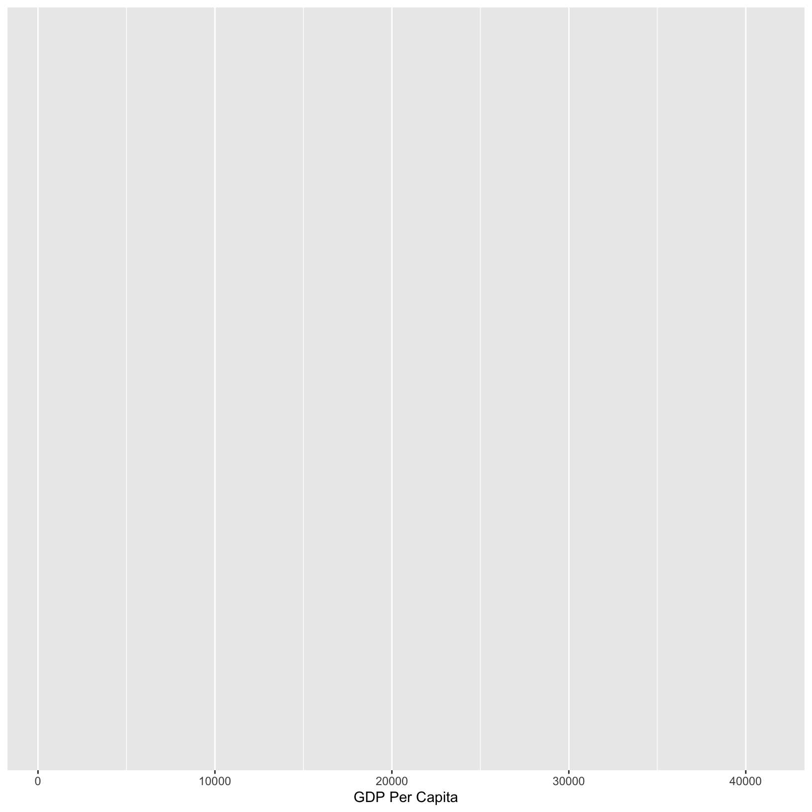
Now let’s map life expectancy to the y-axis, and add a nice label for it:
ggplot(data = gapminder_1997) +
aes(x = gdpPercap) +
labs(x = 'GDP Per Capita') +
aes(y = lifeExp) +
labs(y = 'Life Expectancy')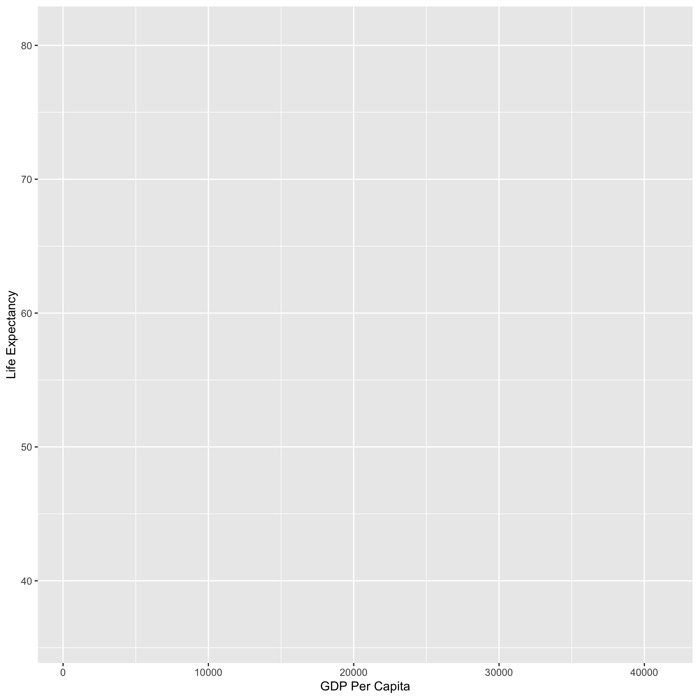
This is progress, but we still don’t have any data plotted. For this,
we tell the plot object what to draw by adding a “geometry” (“geom” for
short). There are many geometries, but we’ll begin with
geom_point(), which plots points in the x-y plane.
ggplot(data = gapminder_1997) +
aes(x = gdpPercap) +
labs(x = 'GDP Per Capita') +
aes(y = lifeExp) +
labs(y = 'Life Expectancy') +
geom_point()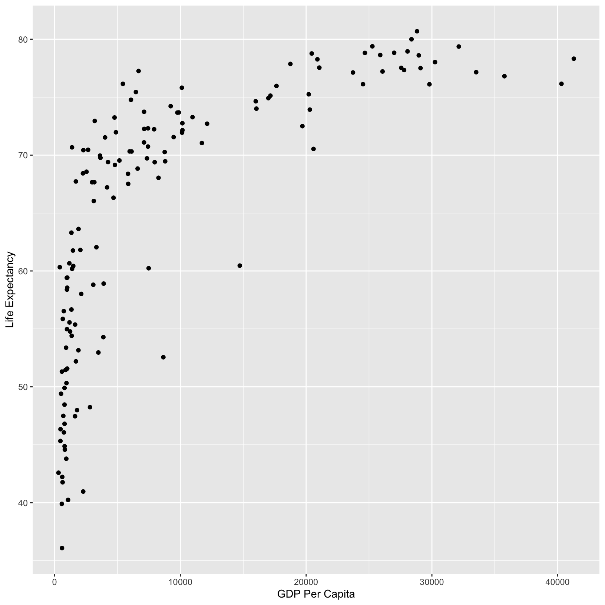
From the plot, it appears that higher GDP correlates with longer life
expectancy. We can add a title to the plot with labs() to
suggest this is the point of the plot:
ggplot(data = gapminder_1997) +
aes(x = gdpPercap) +
labs(x = 'GDP Per Capita') +
aes(y = lifeExp) +
labs(y = 'Life Expectancy') +
geom_point() +
labs(title = 'Do people in wealthier countries live longer?')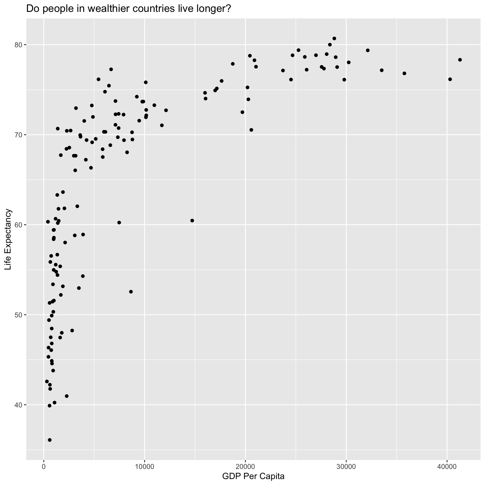
Color
We’ve made excellent progress on our first plot, and without even having to write very much code! There is much more we can do visually to understand what the data might be telling us in addition to the general trend we’ve already observed. For example, we can use different colors for each continent to understand how continent affects this relationship:
ggplot(data = gapminder_1997) +
aes(x = gdpPercap) +
labs(x = 'GDP Per Capita') +
aes(y = lifeExp) +
labs(y = 'Life Expectancy') +
geom_point() +
labs(title = 'Do people in wealthier countries live longer?') +
aes(color = continent)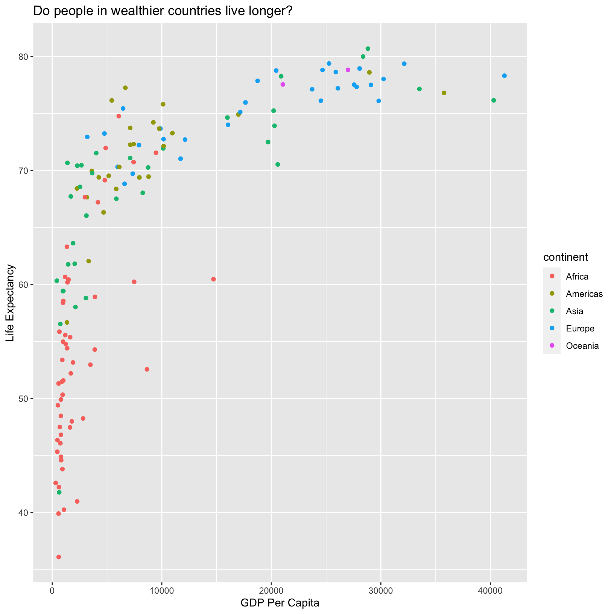
With the continents shown by color, we immediately pick out that African countries tend to have lower life expectancy than other countries. Of course, there are African countries (red points) with life expectancies similar to wealthier countries, suggesting that GDP per capita does not tell the full story about health, as we might have already guessed.
Scale
When we added the color mapping, ggplot added a legend automatically,
assigning different colors to each of the unique values of
continent. The colors ggplot uses are considered a “scale,”
and each aesthetic value we can give (x, y, color, etc) has a
corresponding scale. Let’s experiment with scales briefly to see how
that works.
ggplot(data = gapminder_1997) +
aes(x = gdpPercap) +
labs(x = 'GDP Per Capita') +
aes(y = lifeExp) +
labs(y = 'Life Expectancy') +
geom_point() +
labs(title = 'Do people in wealthier countries live longer?') +
aes(color = continent) +
scale_x_log10()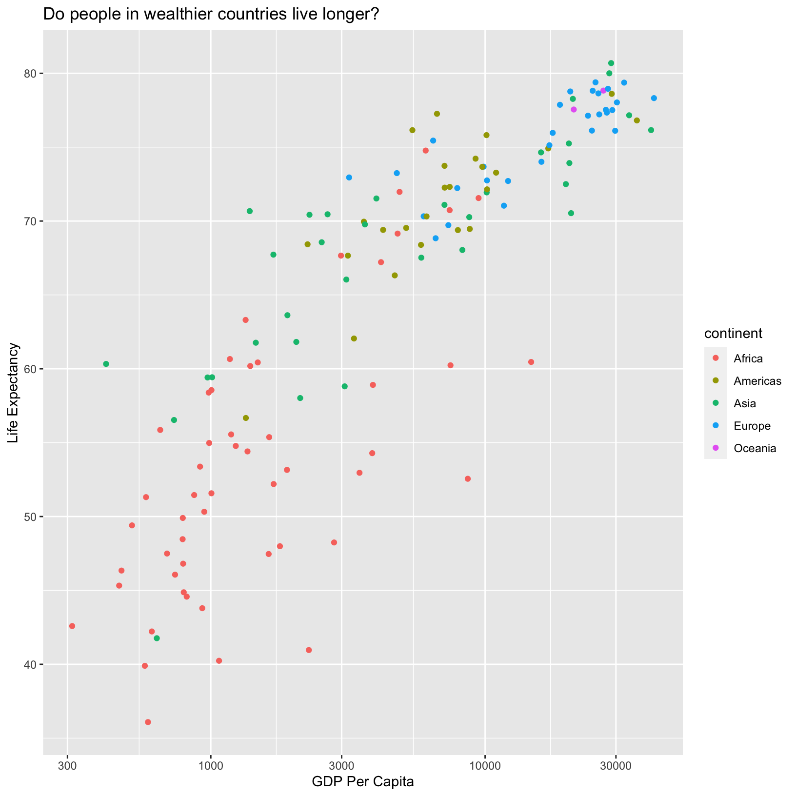
Here we see that the x-axis has been scaled by the log10. Depending
on the data we’re plotting the log scale might be more appropriate than
the default linear scale. We can also change the scale on the
continent mapping to change the colors:
ggplot(data = gapminder_1997) +
aes(x = gdpPercap) +
labs(x = 'GDP Per Capita') +
aes(y = lifeExp) +
labs(y = 'Life Expectancy') +
geom_point() +
labs(title = 'Do people in wealthier countries live longer?') +
aes(color = continent) +
scale_color_brewer(palette = 'Set1')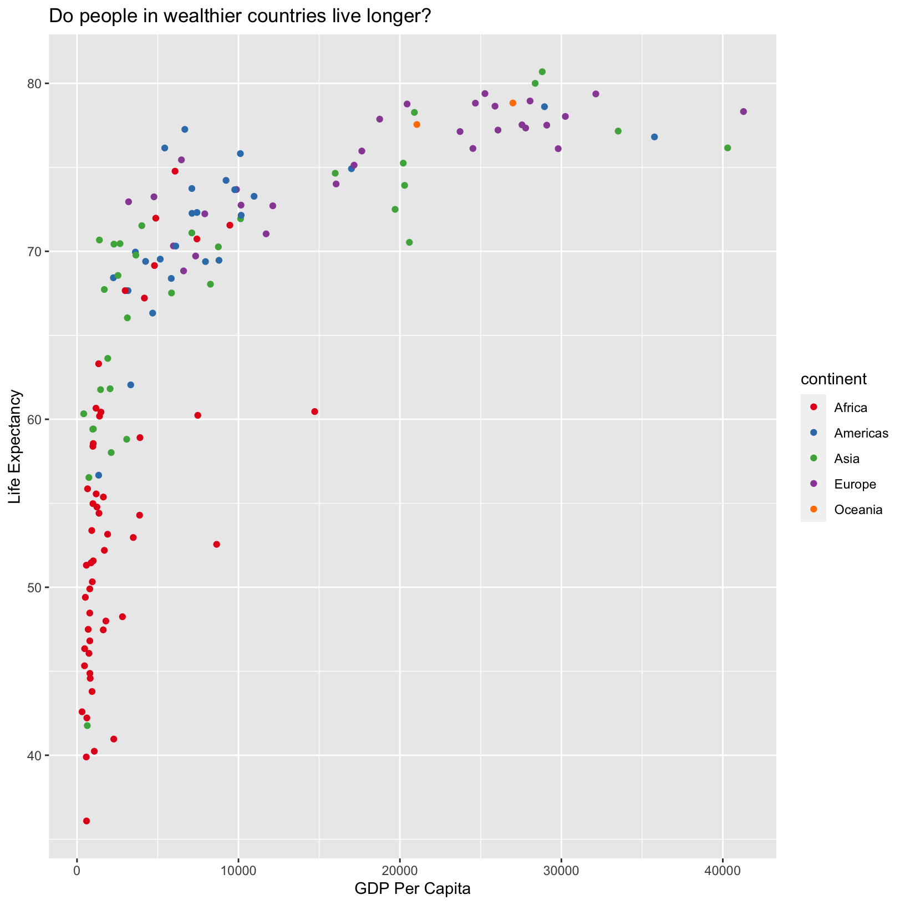
The scale_color_brewer() function is one of many that
changes the colors. There are also many “palettes” built in that are
appropriate in different use cases. Run
RColorBrewer::display.brewer.all() to see them. Note that
there are linear color scales which might be appropriate for categorical
data denoting intensity levels. There are also divergent color scales
that might be useful for continuous variables centered around 0. There
are also discrete color scales more appropriate for categorical data
that aren’t associated with magnitude, like continent.
Size
We also have the population data for each country and we might wonder
if population has an effect on life expectancy and GDP per capita. We
can map pop to the size of the points in the plot by adding
another aes():
ggplot(data = gapminder_1997) +
aes(x = gdpPercap) +
labs(x = 'GDP Per Capita') +
aes(y = lifeExp) +
labs(y = 'Life Expectancy') +
geom_point() +
labs(title = 'Do people in wealthier countries live longer?') +
aes(color = continent) +
scale_color_brewer(palette = 'Set1') +
aes(size = pop)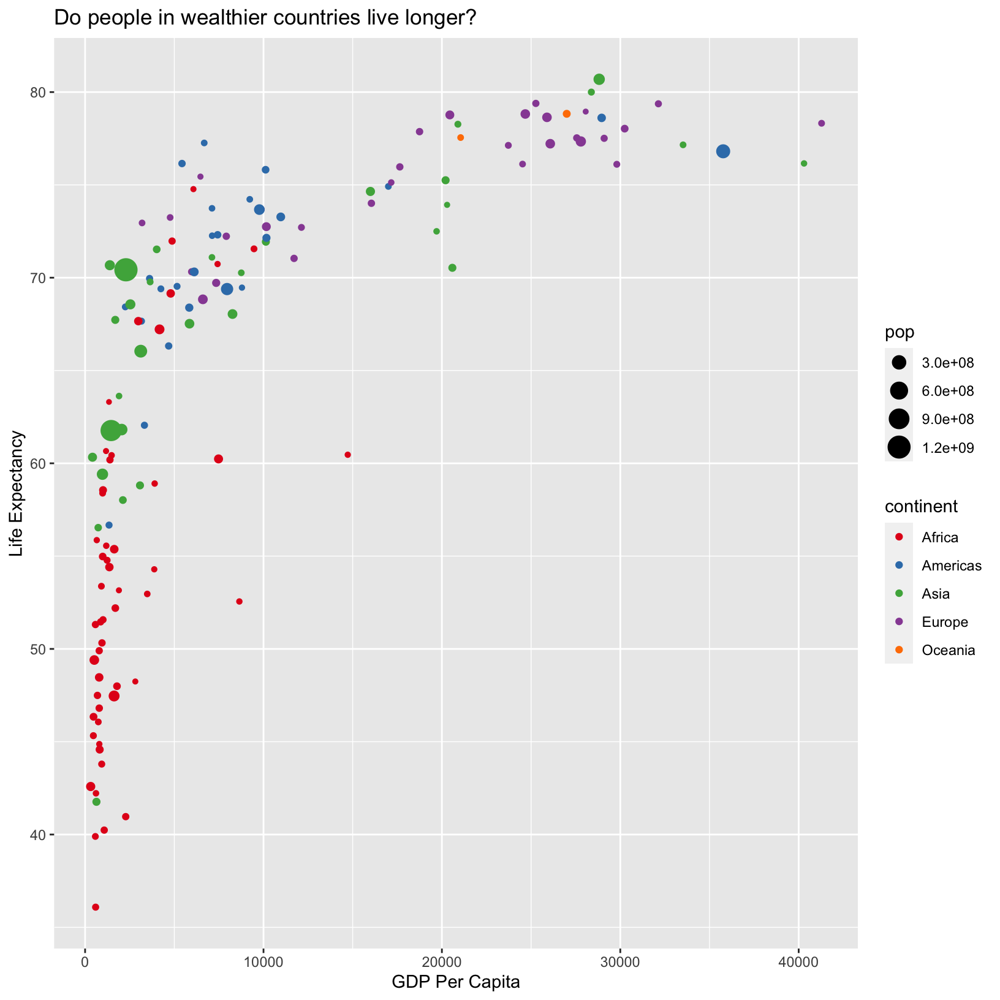
Here ggplot has created another legend for us called
pop, the name of the column, and it shows the size related
to the population. However, this is in scientific notation, which is a
little difficult to interpret at a glance. We can change this by
dividing all the population values by 1,000,000. We can also change the
labels of the legend using the labs() function, just as we
did for the x and y axes and title.
ggplot(data = gapminder_1997) +
aes(x = gdpPercap) +
labs(x = 'GDP Per Capita') +
aes(y = lifeExp) +
labs(y = 'Life Expectancy') +
geom_point() +
labs(title = 'Do people in wealthier countries live longer?') +
aes(color = continent) +
scale_color_brewer(palette = 'Set1') +
labs(color = 'Continent') +
aes(size = pop/1000000) +
labs(size = 'Population (in millions)')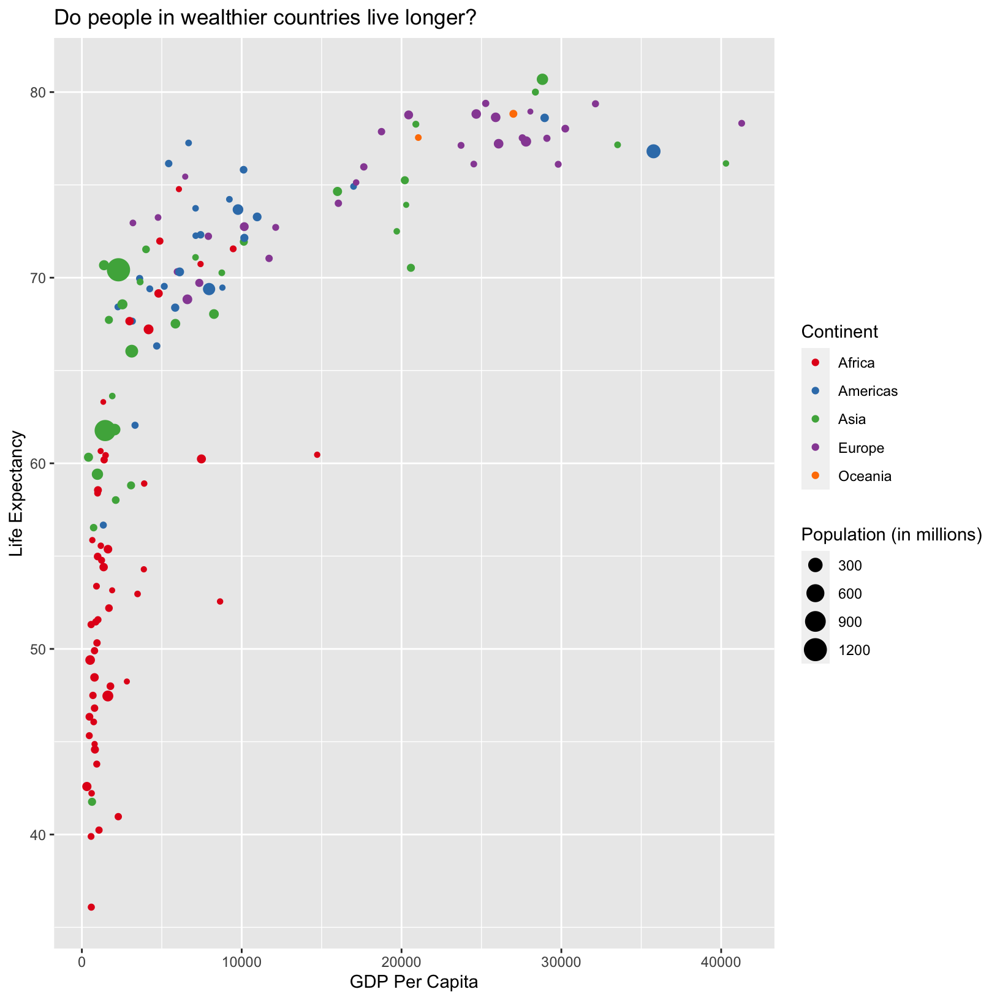
From this plot, it doesn’t look like population has much to do with
either life expectancy or GDP per capita. Notice in the
aes() with size we divided the
pop column by 1,000,000. This works because columns in
aesthetic mappings can be treated just like any other variable, and we
can use functions to transform or change them at plot time rather than
transforming the data first. We will see later that for more complex
transformations, it can be advantageous to transform the data first and
build a plot based on the transformed data rather than doing it at plot
time.
Compact code
We have built our plot up in this lesson, and accumulated many lines of code. Many of these steps can be combined to make the code a bit more compact and readable:
ggplot(data = gapminder_1997) +
aes(x = gdpPercap, y = lifeExp, color = continent, size = pop/1000000) +
geom_point() +
scale_color_brewer(palette = 'Set1') +
labs(x = 'GDP Per Capita', y = 'Life Expectancy', color = 'Continent', size = 'Population (in millions)',
title = 'Do people in wealthier countries live longer?')
Captions
Captions can also be included in the plot itself, if desired, within
the labs() function:
ggplot(data = gapminder_1997) +
aes(x = gdpPercap, y = lifeExp, color = continent, size = pop/1000000) +
geom_point() +
scale_color_brewer(palette = 'Set1') +
labs(x = 'GDP Per Capita', y = 'Life Expectancy', color = 'Continent', size = 'Population (in millions)',
title = 'Do people in wealthier countries live longer?',
caption = 'Figure: GDP per capita and life expectancy are positively correlated, while population is not.')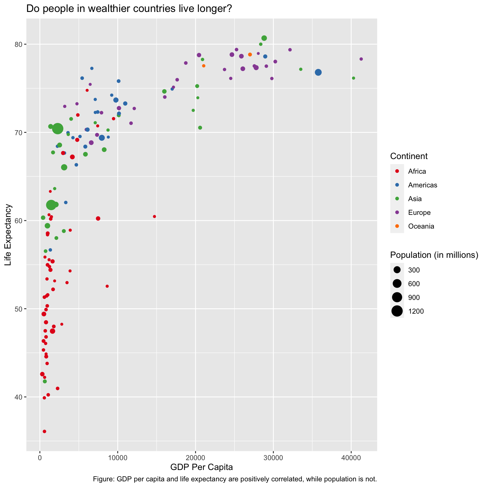
Exploring more complex data
The gapminder_1997 has been useful for exploring
dplyr and ggplot functions. Let’s load in a
more complex dataset so we have a bit more data to explore. The
data/gapmainder_data.csv dataset is similar to
gapminder_1997, but is longitudinal. Let’s load it in and
explore it:
gapminder_data = read_csv('data/gapminder_data.csv')Rows: 1704 Columns: 6
── Column specification ────────────────────────────────────────────────────────────────────────
Delimiter: ","
chr (2): country, continent
dbl (4): year, pop, lifeExp, gdpPercap
ℹ Use `spec()` to retrieve the full column specification for this data.
ℹ Specify the column types or set `show_col_types = FALSE` to quiet this message.Let’s look at a preview of the data and explore some functions to see its attributes. First, we can preview it by evaluating a line of code which just names the object:
gapminder_data# A tibble: 1,704 × 6
country year pop continent lifeExp gdpPercap
<chr> <dbl> <dbl> <chr> <dbl> <dbl>
1 Afghanistan 1952 8425333 Asia 28.8 779.
2 Afghanistan 1957 9240934 Asia 30.3 821.
3 Afghanistan 1962 10267083 Asia 32.0 853.
4 Afghanistan 1967 11537966 Asia 34.0 836.
5 Afghanistan 1972 13079460 Asia 36.1 740.
6 Afghanistan 1977 14880372 Asia 38.4 786.
7 Afghanistan 1982 12881816 Asia 39.9 978.
8 Afghanistan 1987 13867957 Asia 40.8 852.
9 Afghanistan 1992 16317921 Asia 41.7 649.
10 Afghanistan 1997 22227415 Asia 41.8 635.
# ℹ 1,694 more rowsAgain, the tibble provides a nice preview of the data
along with many of the attributes including the dimensions and types of
columns. There are some functions we can use to determine these
attributes on their own:
dim(gapminder_data)[1] 1704 6This gives us the number of rows and columns, respectively.
head(gapminder_data)# A tibble: 6 × 6
country year pop continent lifeExp gdpPercap
<chr> <dbl> <dbl> <chr> <dbl> <dbl>
1 Afghanistan 1952 8425333 Asia 28.8 779.
2 Afghanistan 1957 9240934 Asia 30.3 821.
3 Afghanistan 1962 10267083 Asia 32.0 853.
4 Afghanistan 1967 11537966 Asia 34.0 836.
5 Afghanistan 1972 13079460 Asia 36.1 740.
6 Afghanistan 1977 14880372 Asia 38.4 786.tail(gapminder_data)# A tibble: 6 × 6
country year pop continent lifeExp gdpPercap
<chr> <dbl> <dbl> <chr> <dbl> <dbl>
1 Zimbabwe 1982 7636524 Africa 60.4 789.
2 Zimbabwe 1987 9216418 Africa 62.4 706.
3 Zimbabwe 1992 10704340 Africa 60.4 693.
4 Zimbabwe 1997 11404948 Africa 46.8 792.
5 Zimbabwe 2002 11926563 Africa 40.0 672.
6 Zimbabwe 2007 12311143 Africa 43.5 470.The head() and tail() functions display the
first and last few rows of an object, respectively. There is also a
useful function called “structure”, str(), which displays
the structure of an object. This is especially useful when we don’t know
what an object contains.
str(gapminder_data)spc_tbl_ [1,704 × 6] (S3: spec_tbl_df/tbl_df/tbl/data.frame)
$ country : chr [1:1704] "Afghanistan" "Afghanistan" "Afghanistan" "Afghanistan" ...
$ year : num [1:1704] 1952 1957 1962 1967 1972 ...
$ pop : num [1:1704] 8425333 9240934 10267083 11537966 13079460 ...
$ continent: chr [1:1704] "Asia" "Asia" "Asia" "Asia" ...
$ lifeExp : num [1:1704] 28.8 30.3 32 34 36.1 ...
$ gdpPercap: num [1:1704] 779 821 853 836 740 ...
- attr(*, "spec")=
.. cols(
.. country = col_character(),
.. year = col_double(),
.. pop = col_double(),
.. continent = col_character(),
.. lifeExp = col_double(),
.. gdpPercap = col_double()
.. )
- attr(*, "problems")=<externalptr> This is similar to information we see in the tibble
preview. We see the type of object, dimensions, columns, their type, and
a preview of their values. Of course, the summary()
function works just the same as it did for gapminder_1997,
and it’s a good idea to take a peek and see what the range of the data
are:
summary(gapminder_data) country year pop continent lifeExp
Length:1704 Min. :1952 Min. :6.001e+04 Length:1704 Min. :23.60
Class :character 1st Qu.:1966 1st Qu.:2.794e+06 Class :character 1st Qu.:48.20
Mode :character Median :1980 Median :7.024e+06 Mode :character Median :60.71
Mean :1980 Mean :2.960e+07 Mean :59.47
3rd Qu.:1993 3rd Qu.:1.959e+07 3rd Qu.:70.85
Max. :2007 Max. :1.319e+09 Max. :82.60
gdpPercap
Min. : 241.2
1st Qu.: 1202.1
Median : 3531.8
Mean : 7215.3
3rd Qu.: 9325.5
Max. :113523.1 We see the same columns as gapminder_1997 but we notice
that there are many more years of data collected than just 1997. Let’s
jump right in with a plot to understand what this data looks like. And
let’s begin with something similar to the scatterplot we did for
gapminder_1997, but include the year.
ggplot(data = gapminder_data) +
aes(x = year, y = lifeExp, color = continent) +
geom_point()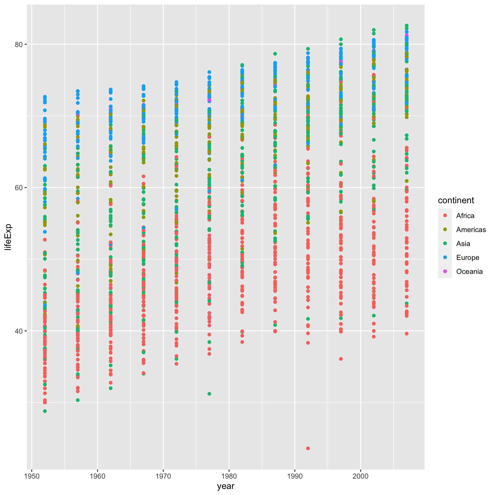
There seems to be an overall trend of higher life expectancy over
time, but it’s not as clear as it could be. In our plot, the data
connecting countries is not apparent. Before we figure out how to
connect the dots, let’s use our dplyr knowledge to see if
that overall trend we suspect is correct.
gapminder_data %>% group_by(year) %>% summarize(mean_life_exp = mean(lifeExp))# A tibble: 12 × 2
year mean_life_exp
<dbl> <dbl>
1 1952 49.1
2 1957 51.5
3 1962 53.6
4 1967 55.7
5 1972 57.6
6 1977 59.6
7 1982 61.5
8 1987 63.2
9 1992 64.2
10 1997 65.0
11 2002 65.7
12 2007 67.0That seems clear enough. Of course, this is for all countries combined. We could add an additional group of continent:
gapminder_data %>% group_by(year, continent) %>% summarize(mean_life_exp = mean(lifeExp))`summarise()` has grouped output by 'year'. You can override using the `.groups` argument.# A tibble: 60 × 3
# Groups: year [12]
year continent mean_life_exp
<dbl> <chr> <dbl>
1 1952 Africa 39.1
2 1952 Americas 53.3
3 1952 Asia 46.3
4 1952 Europe 64.4
5 1952 Oceania 69.3
6 1957 Africa 41.3
7 1957 Americas 56.0
8 1957 Asia 49.3
9 1957 Europe 66.7
10 1957 Oceania 70.3
# ℹ 50 more rowsBut this is ordered by year, and to clearly see the trend, ordering by continent would be better:
gapminder_data %>% group_by(year, continent) %>% summarize(mean_life_exp = mean(lifeExp)) %>% arrange(continent)`summarise()` has grouped output by 'year'. You can override using the `.groups` argument.# A tibble: 60 × 3
# Groups: year [12]
year continent mean_life_exp
<dbl> <chr> <dbl>
1 1952 Africa 39.1
2 1957 Africa 41.3
3 1962 Africa 43.3
4 1967 Africa 45.3
5 1972 Africa 47.5
6 1977 Africa 49.6
7 1982 Africa 51.6
8 1987 Africa 53.3
9 1992 Africa 53.6
10 1997 Africa 53.6
# ℹ 50 more rowsThis is a step in the right direction, but now the
tibble preview is actually preventing us from seeing all
the data. There are two ways we can see the full result:
life_exp_by_year_continent = gapminder_data %>% group_by(year, continent) %>% summarize(mean_life_exp = mean(lifeExp)) %>% arrange(continent)`summarise()` has grouped output by 'year'. You can override using the `.groups` argument.View(life_exp_by_year_continent)The View() function will show the table in the Scripts
pane. Another way to accomplish this is to %>% pipe
life_exp_by_year_continent as a
data.frame:
life_exp_by_year_continent %>% data.frame year continent mean_life_exp
1 1952 Africa 39.13550
2 1957 Africa 41.26635
3 1962 Africa 43.31944
4 1967 Africa 45.33454
5 1972 Africa 47.45094
6 1977 Africa 49.58042
7 1982 Africa 51.59287
8 1987 Africa 53.34479
9 1992 Africa 53.62958
10 1997 Africa 53.59827
11 2002 Africa 53.32523
12 2007 Africa 54.80604
13 1952 Americas 53.27984
14 1957 Americas 55.96028
15 1962 Americas 58.39876
16 1967 Americas 60.41092
17 1972 Americas 62.39492
18 1977 Americas 64.39156
19 1982 Americas 66.22884
20 1987 Americas 68.09072
21 1992 Americas 69.56836
22 1997 Americas 71.15048
23 2002 Americas 72.42204
24 2007 Americas 73.60812
25 1952 Asia 46.31439
26 1957 Asia 49.31854
27 1962 Asia 51.56322
28 1967 Asia 54.66364
29 1972 Asia 57.31927
30 1977 Asia 59.61056
31 1982 Asia 62.61794
32 1987 Asia 64.85118
33 1992 Asia 66.53721
34 1997 Asia 68.02052
35 2002 Asia 69.23388
36 2007 Asia 70.72848
37 1952 Europe 64.40850
38 1957 Europe 66.70307
39 1962 Europe 68.53923
40 1967 Europe 69.73760
41 1972 Europe 70.77503
42 1977 Europe 71.93777
43 1982 Europe 72.80640
44 1987 Europe 73.64217
45 1992 Europe 74.44010
46 1997 Europe 75.50517
47 2002 Europe 76.70060
48 2007 Europe 77.64860
49 1952 Oceania 69.25500
50 1957 Oceania 70.29500
51 1962 Oceania 71.08500
52 1967 Oceania 71.31000
53 1972 Oceania 71.91000
54 1977 Oceania 72.85500
55 1982 Oceania 74.29000
56 1987 Oceania 75.32000
57 1992 Oceania 76.94500
58 1997 Oceania 78.19000
59 2002 Oceania 79.74000
60 2007 Oceania 80.71950And the result is printed out in the Console pane. Either way, the trend of increasing life expectancy over time that we saw globally appears to hold across all continents as well.
Line geometry
Of course, seeing this data would be more
compelling, and we already went through the trouble to save the
summarized data as its own object, so let’s use it to introduce the line
geometry geom_line().
ggplot(life_exp_by_year_continent) +
aes(x = year, y = mean_life_exp, color = continent) +
geom_line()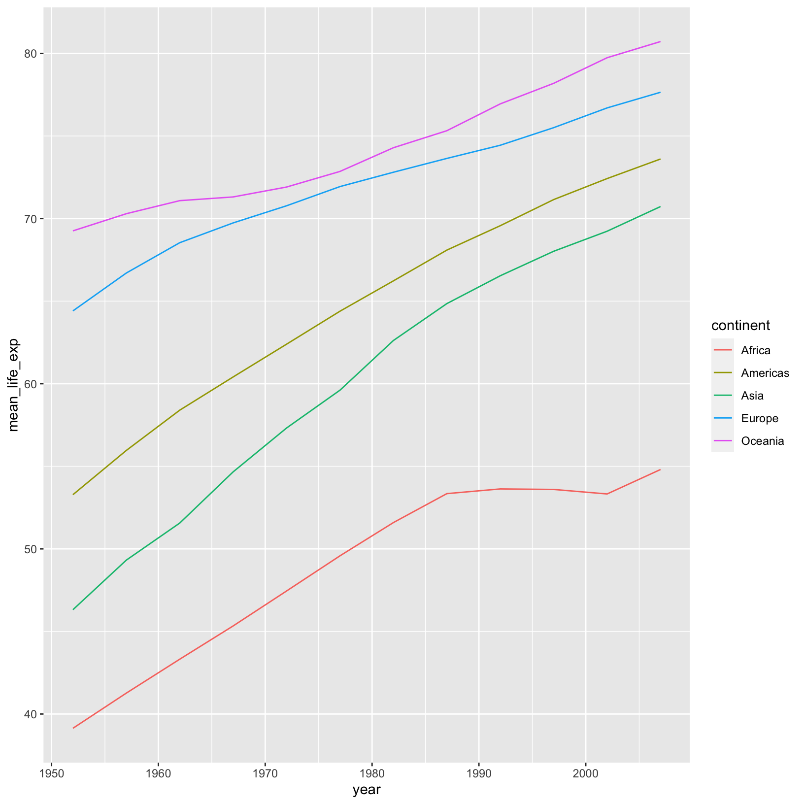
The geom_line() geometry connects the data points across
time in the appropriate way. Sure enough, we see what we noticed from
looking at the summarized table. This is a good example of needing to
summarize the data before plotting, rather than altering the data at
runtime, as we did when we divided the population by 1,000,000.
Let’s pull this plot back a bit and try to plot all the countries at
the same time, rather than an average. Let’s try altering the code above
and replace geom_point() with geom_line():
ggplot(data = gapminder_data) +
aes(x = year, y = lifeExp, color = continent) +
geom_line()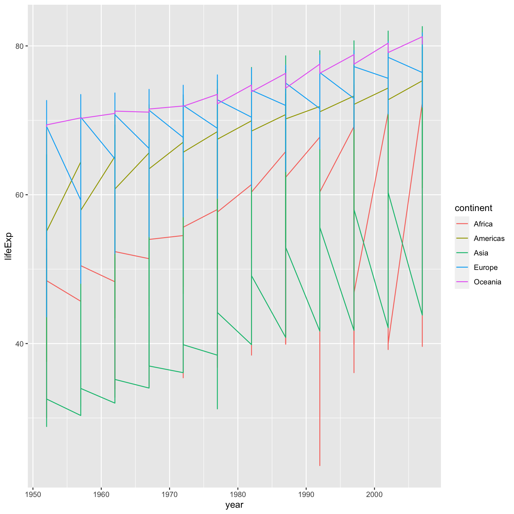
This is definitely not the right thing. We got a line for each
continent, but we want a line for each country. To tell
ggplot to connect the values for each country,
we use the group aesthetic:
ggplot(data = gapminder_data) +
aes(x = year, y = lifeExp, color = continent, group = country) +
geom_line()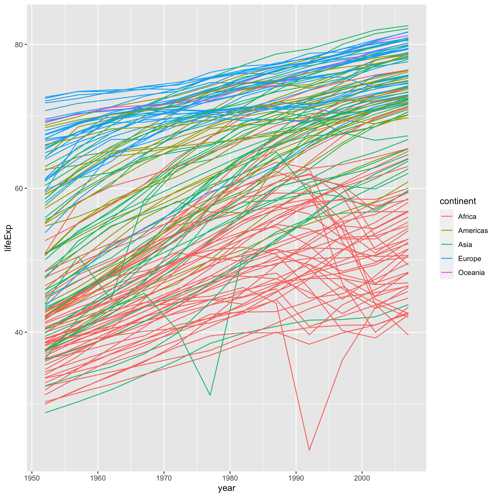
And now we see each country plotted as its own line so we can see the overall trend, as well as the deviations from the trend.
Geometries for categories
The geom_point and geom_line geometries are
designed to display numeric values on the x and y axes. Often data has
discrete variables (continent or country)
where something like a box plot is more appropriate. Let’s revisit our
gapminder_1997 data to create a box plot with the continent
on the x axis and the life expectancy on the y-axis.
ggplot(data = gapminder_1997) + aes(x = continent, y = lifeExp) + geom_boxplot()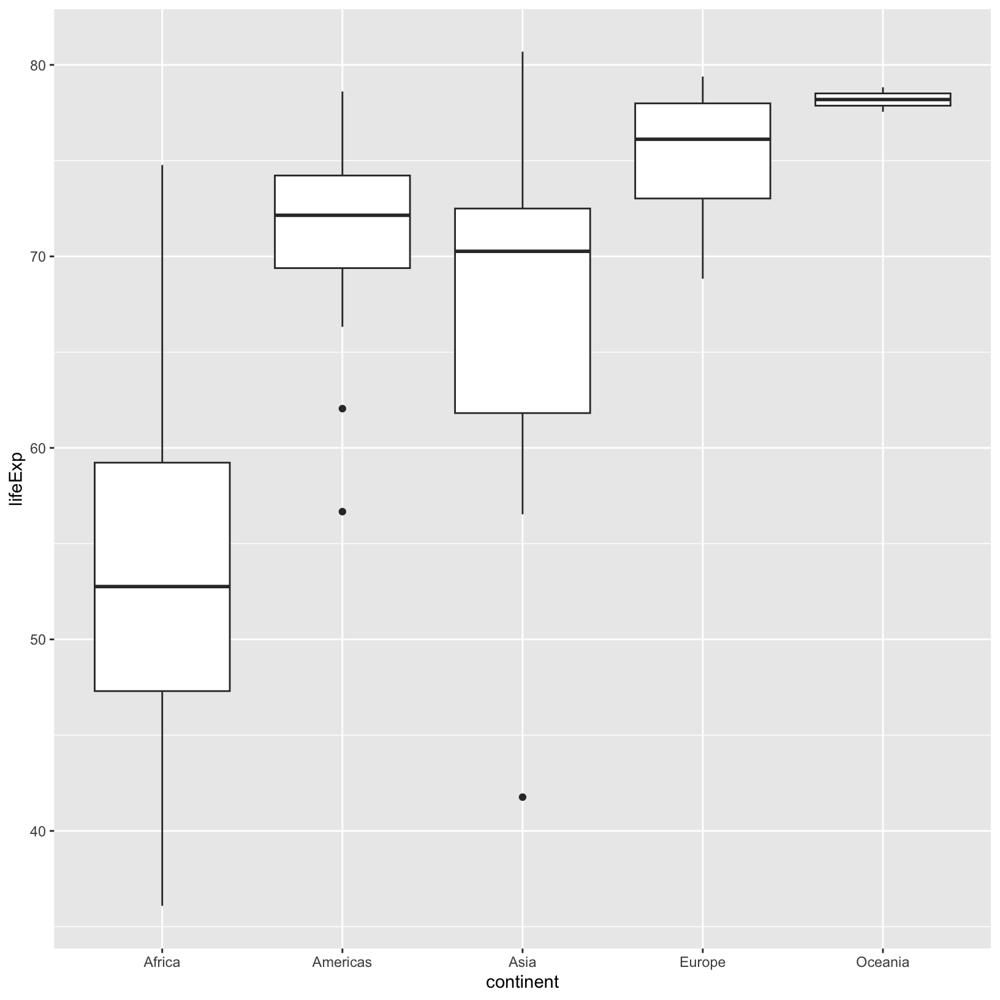
This makes comparing the range and spread of values across groups
easier. The median of the data is displayed, as is the 25% and 75%-iles
and any outliers. Another discrete geometry is the
geom_violin, which gives an indication of the density of
the data points along the values being plotted.
ggplot(data = gapminder_1997) + aes(x = continent, y = lifeExp) + geom_violin()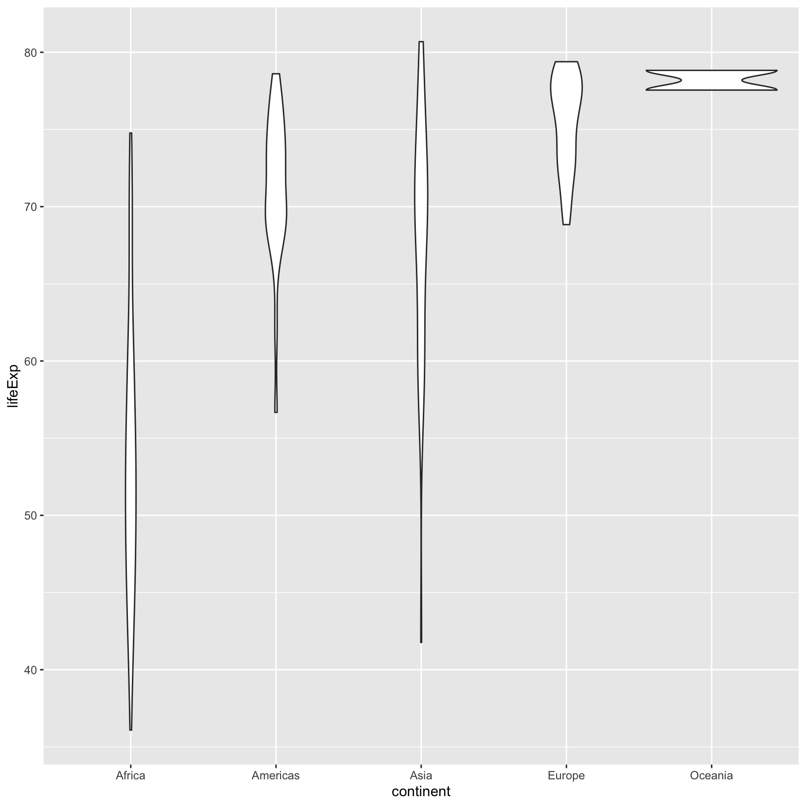
Layers
To get a sense for how the data are distributed in the box plot, we
could add a layer with geom_point() in addition to
geom_boxplot().
ggplot(data = gapminder_1997) +
aes(x = continent, y = lifeExp) +
geom_boxplot() +
geom_point()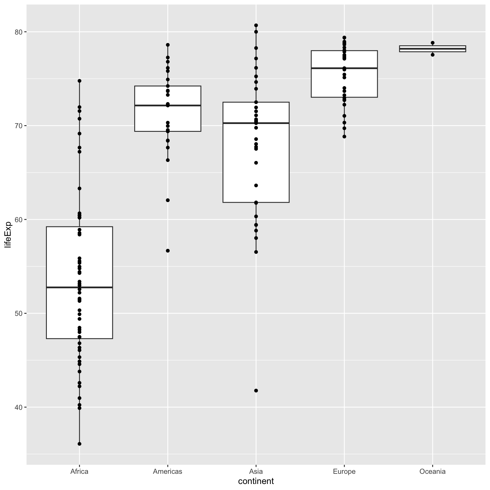
The points are stacking on top of one another, and it can be hard to
tell, for a value of lifeExp, if more than one data point
is there. We can fix this by “jittering” the points, with
geom_jitter().
ggplot(data = gapminder_1997) +
aes(x = continent, y = lifeExp) +
geom_boxplot() +
geom_jitter()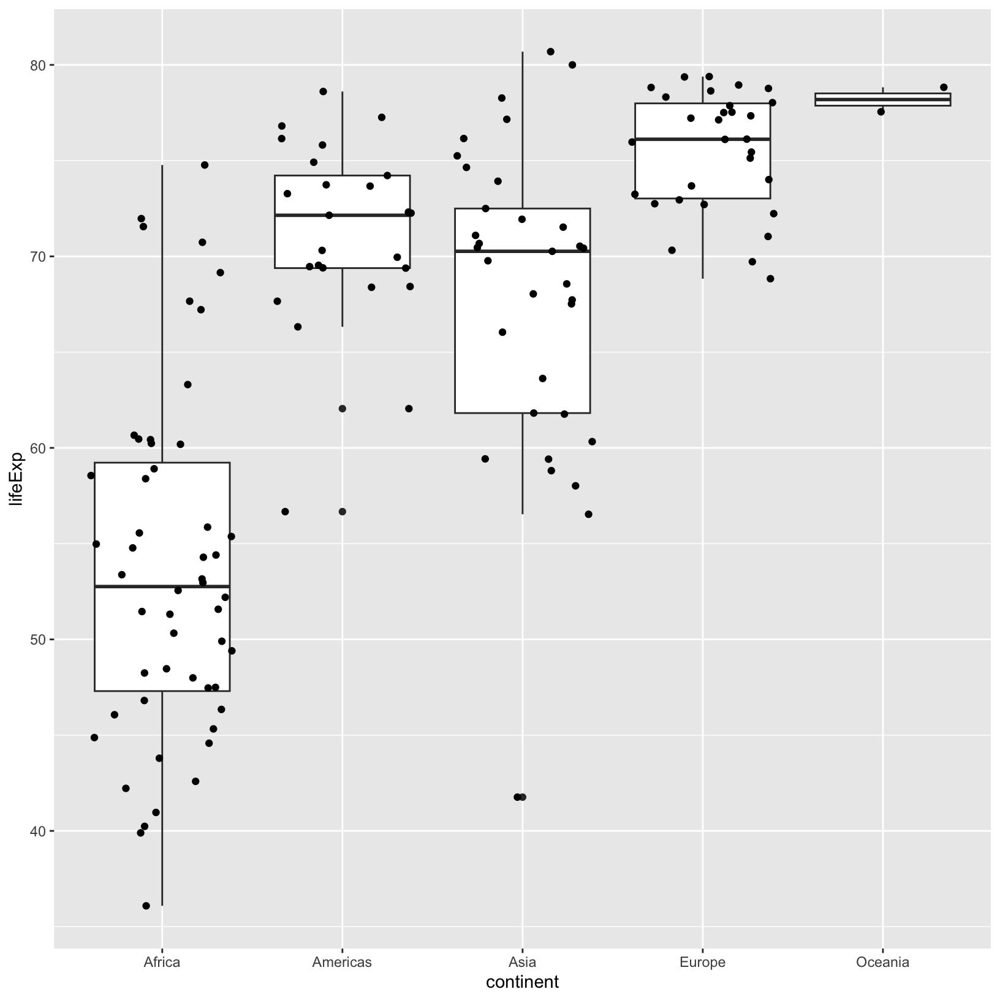
Within a column, the horizontal position doesn’t have meaning, and is
meant to visually separate points of the same value. However, it feels
like the jitter is a bit wide, causing the boundaries between the
continents to be unclear. If we look at the help
?geom_jitter we’d see a width parameter, which
controls how wide to allow the jitter.
ggplot(data = gapminder_1997) +
aes(x = continent, y = lifeExp) +
geom_boxplot() +
geom_jitter(width = 0.15)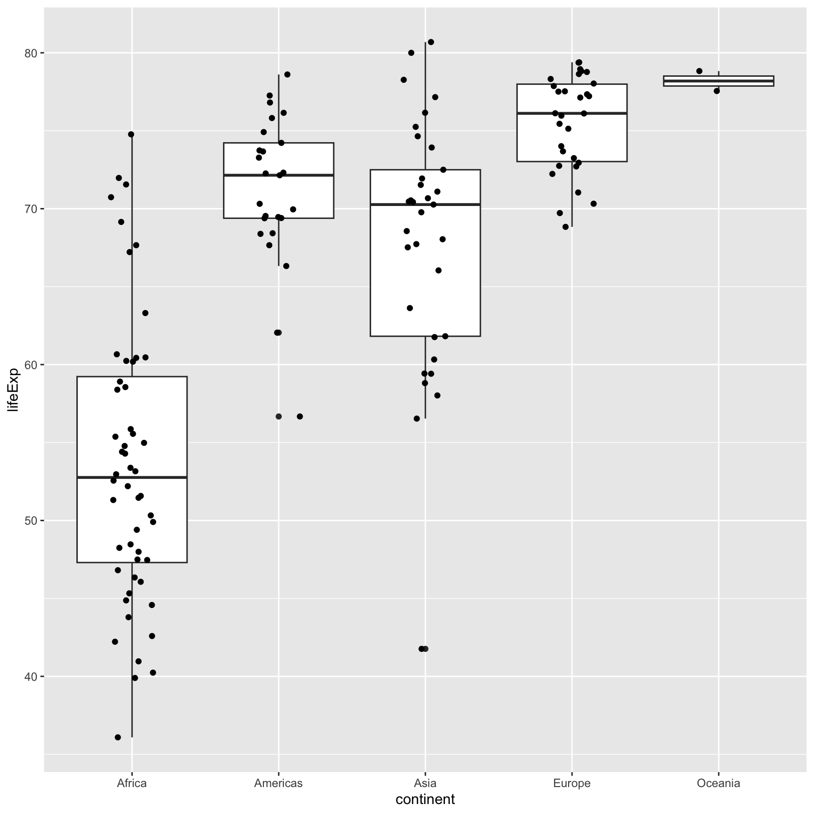
It may take some iterations of the width parameter to
get things where we want them. This is pretty common in
ggplot2. Note that the word “layer” also means that the
layers appear in a particular order, for example, if we swap the
geom_boxplot() and geom_jitter() we see that
the points are obscured.
ggplot(data = gapminder_1997) +
aes(x = continent, y = lifeExp) +
geom_jitter(width = 0.15) +
geom_boxplot()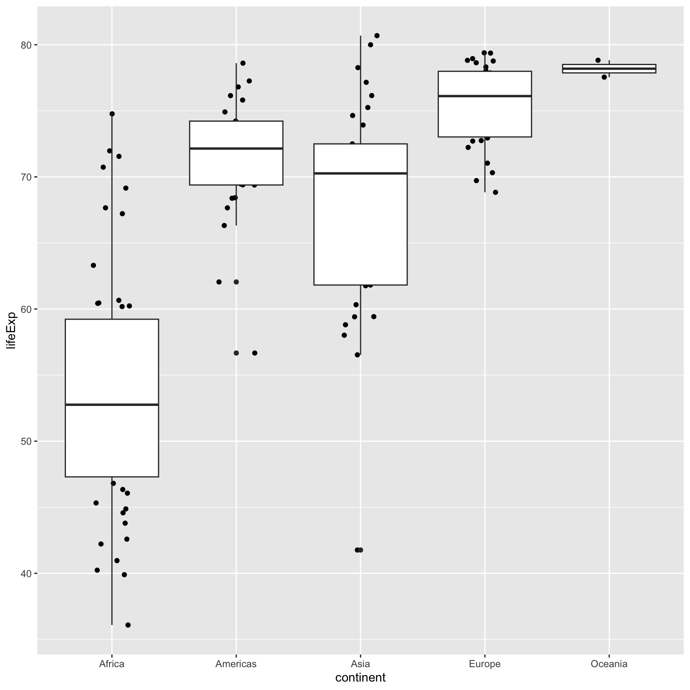
Using the width parameter in geom_jitter(),
we saw that it was possible to change aspects of a layer without
altering other layers. This carries into the aesthetics too. For
example, if we wanted to add a size aesthetic using the
pop to only the geom_jitter() layer:
ggplot(data = gapminder_1997) +
aes(x = continent, y = lifeExp) +
geom_boxplot() +
geom_jitter(aes(size = pop), width = 0.3)
Color and Fill
Let’s have a look at our jittered boxplot and explore
color and fill. When a color is assigned
directly, we use the name of the color in quotes, as in ‘pink’, and we
don’t need to use the aes() function.
ggplot(data = gapminder_1997) +
aes(x = continent, y = lifeExp) +
geom_boxplot(color = 'pink') +
geom_jitter(aes(size = pop), width = 0.3)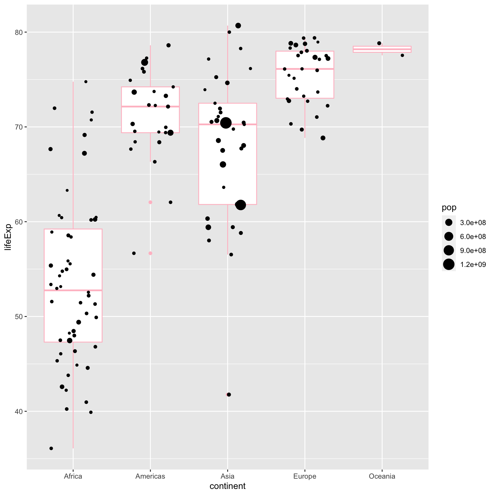
We could add a different color to the points in the
geom_jitter(), and we would do it outside of the
aes() if we wanted them to be the same.
ggplot(data = gapminder_1997) +
aes(x = continent, y = lifeExp) +
geom_boxplot(color = 'pink') +
geom_jitter(aes(size = pop), color = 'blue', width = 0.3)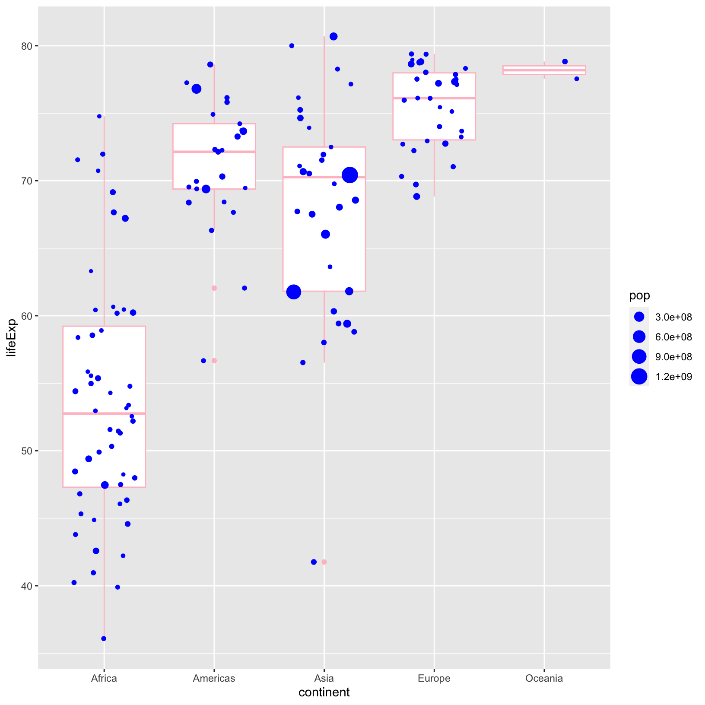
Notice that color changed the outline of the
geom_boxplot(). We would use fill if we wanted
to change the inside color of the box plot.
ggplot(data = gapminder_1997) +
aes(x = continent, y = lifeExp) +
geom_boxplot(color = 'pink', fill = 'green') +
geom_jitter(aes(size = pop), color = 'blue', width = 0.3)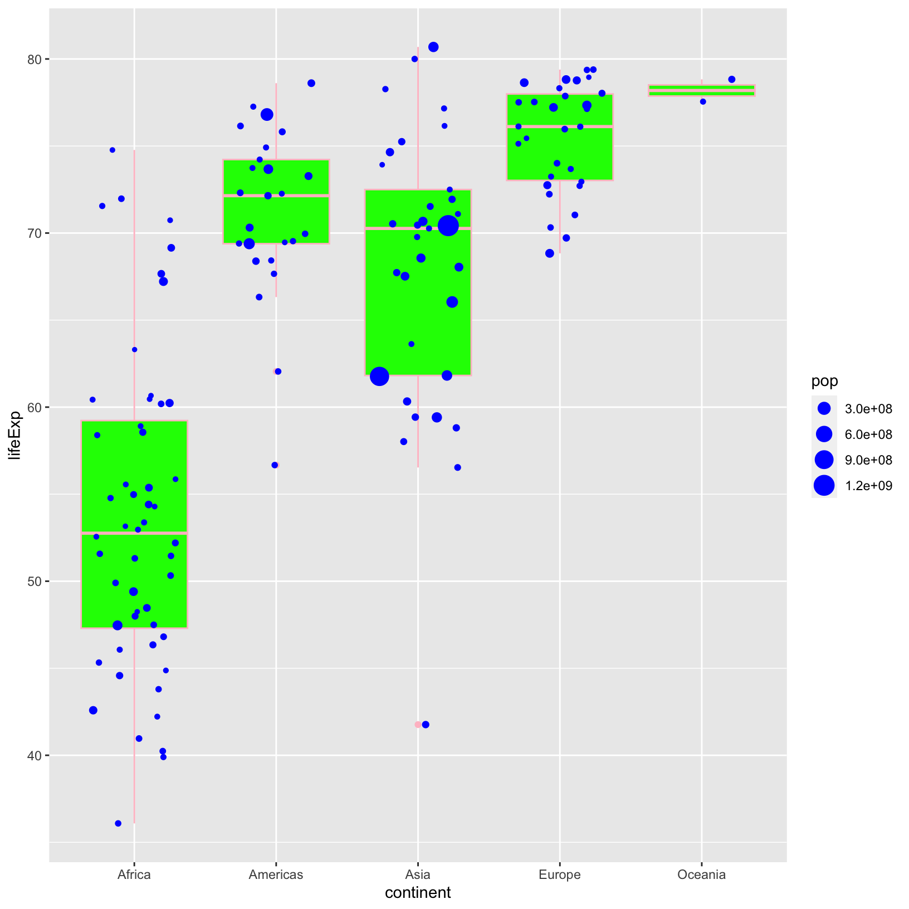
We probably won’t publish this particular plot, as beautiful as it is.
We have already seen in other plots that we can link
color to an attribute of our data. We can do the same with
fill, but we do it inside of the aes()
function.
ggplot(data = gapminder_1997) +
aes(x = continent, y = lifeExp) +
geom_boxplot(aes(fill = continent)) +
geom_jitter(aes(size = pop), width = 0.3)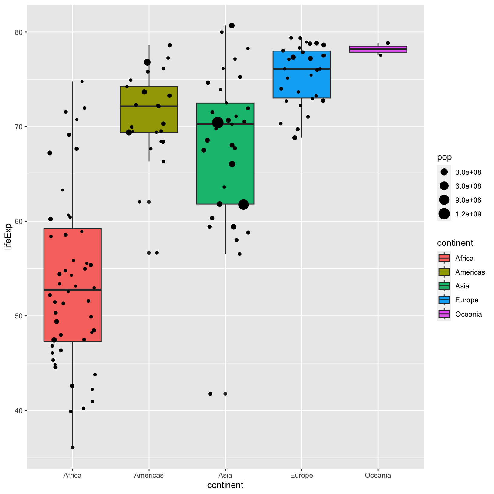
Single-variable plots
Our very first plot involved two variables, but it’s often helpful to
plot a single variable’s values as a histogram to understand its
distribution. Here the geometries geom_histogram() and
geom_density() can help us. Let’s take a look at the
histogram for lifeExp.
ggplot(data = gapminder_1997) +
aes(x = lifeExp) +
geom_histogram()`stat_bin()` using `bins = 30`. Pick better value with `binwidth`.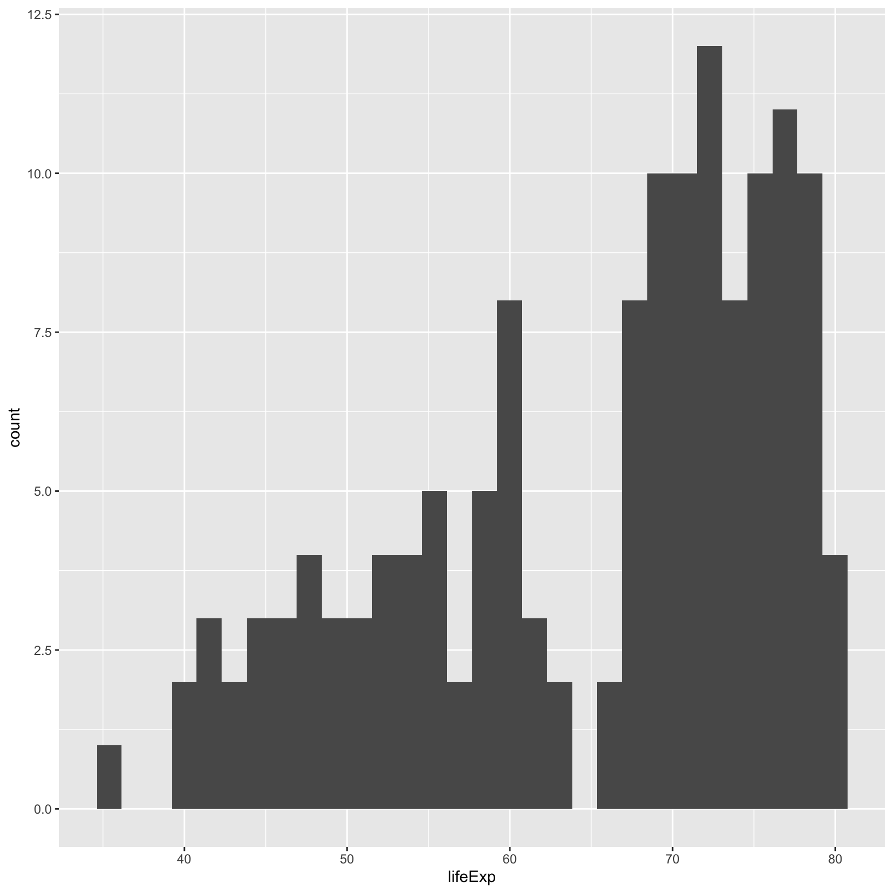
Here there is a message displayed that the default number of bins is
30 from geom_histogram(), but that may not be appropriate
for all data. There are two ways we can change the bins the geometry
uses to count, bins which fixes the number of bins, and
binwidth which fixes the intervals in which values are
counted. Let’s change the number of bins to 20.
ggplot(data = gapminder_1997) +
aes(x = lifeExp) +
geom_histogram(bins = 20)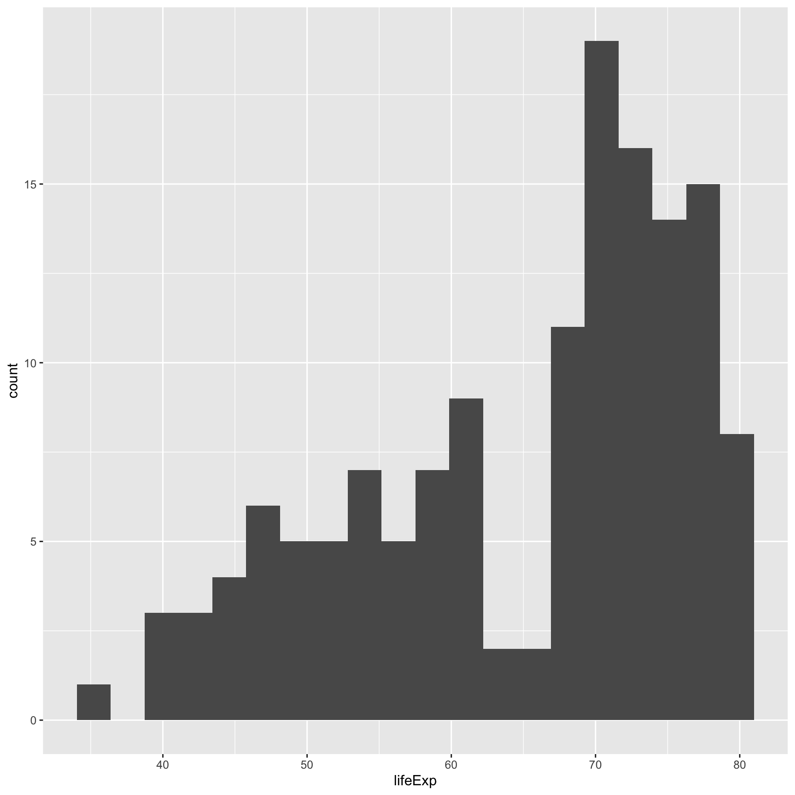
We can see there are fewer bins in this plot. If we wanted to make the bins span 5 years, we would do:
ggplot(data = gapminder_1997) +
aes(x = lifeExp) +
geom_histogram(binwidth = 5)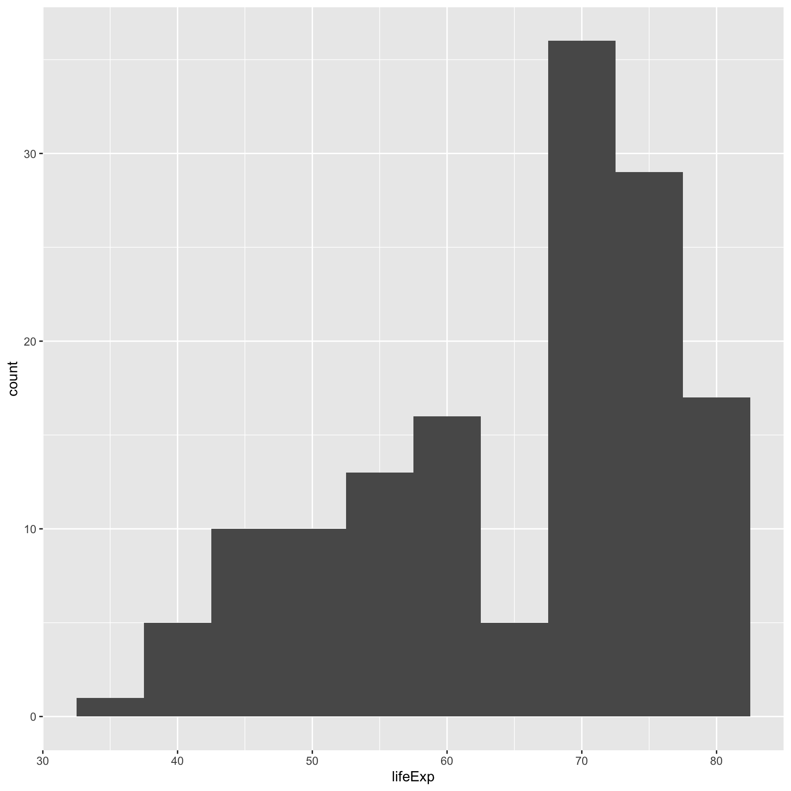
Changing the binwidth makes the histogram more easily intepretable
because we know the range of each bar. If, instead of frequency, we
wanted to look at the density, the smoothed version of the histogram, we
could use the geom_density() geometry.
ggplot(data = gapminder_1997) +
aes(x = lifeExp) +
geom_density()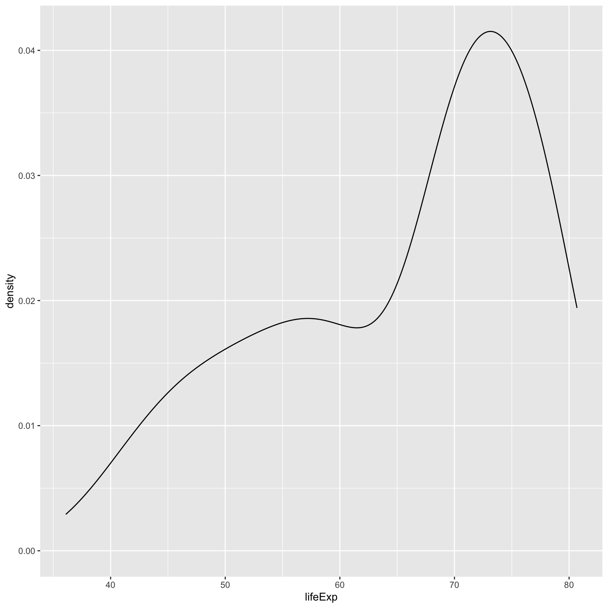
Facets
We have used the aesthetics aes() to map data to
color, fill, etc. and distinguish differences
between the subgroups. Faceting is another technique to plot subgroups
in their own panels of a single plot, also helping to distinguish
differences between subgroups. We started off a relatively simple plot
of GDP per capita versus life expectancy, and later colored it by
continent. But let’s use facets to split the continents into their own
sub-plots.
ggplot(gapminder_1997) +
aes(x = gdpPercap, y = lifeExp) +
geom_point() +
facet_wrap(vars(continent))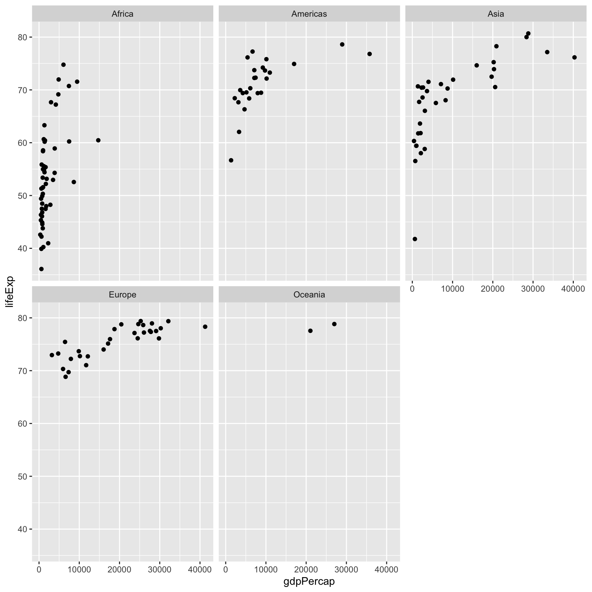
Importantly, we had to use the helper function vars() to
tell facet_wrap() what the column name to use in the facet.
The details about why vars() is needed are somewhat
nuanced, so we won’t get into them, but know that some
ggplot2 and dplyr functions may require the
use of vars() when giving column names, whereas in the
aes() function we don’t need the vars().
It might be easier to compare differences in the sub-plots if they
were arranged by row or by column, rather than wrapping them in a grid.
Have a look at the help for ?facet_grid(). There are
rows and cols arguments that will display the
facets as rows or columns.
ggplot(gapminder_1997) +
aes(x = gdpPercap, y = lifeExp) +
geom_point() +
facet_grid(rows = vars(continent))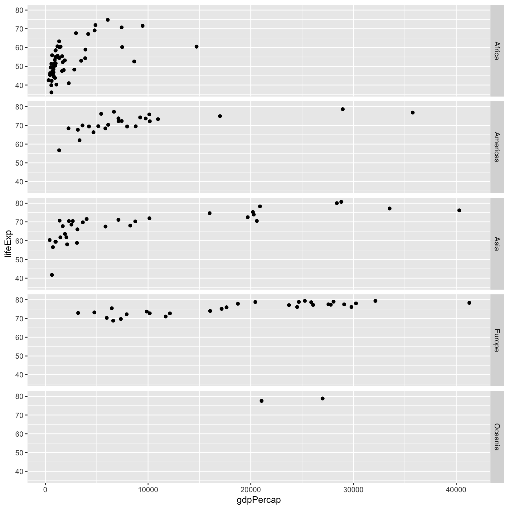
Now there is only one x-axis, and multiple y-axes. Here the scale is
the same for all the y-axes to make them comparable, but there are
parameters of facet_grid() that allow the scales to change
depending on the data within the facet itself if that’s more
appropriate.
Saving plots
While it’s great to keep the code that created the plot in an R
script, it’s also great to save it as an image so you can share it with
people that don’t use R, or don’t want to run all your code to generate
the plot. Since we’re saving all our steps in a script, we’ll make use
of the ggsave() function. Let’s start by taking a look at
the help:
?ggsaveNote that it defaults to saving the last displayed plot. also note
that there are parameters for the dimensions, the units of the
dimensions, and the resolution. Let’s run a very basic version of
ggsave().
ggsave('first_saved_plot.png', height = 6, width = 6, dpi = 300)We can then navigate to the plot and click to open it in the File
pane. Note that R Studio Server let’s you easily download any file by
clicking any number of checkboxes for the files and then clicking “More”
and “Export”. In the previous command we’ve used the .png
extension, so that ggsave() knows to create a PNG, but we
could have also used .jpeg, .pdf,
.eps, etc to create an appropriate file output. See the
documentation for ggsave() for supported file formats, and
note that this is an easy way to save multiple formats and resolutions
depending on whether you want to quickly share with a collaborator, or
share with a journal for publication.
We just learned how to save plots as files, but we can also save plots as objects in R. This is helpful for when we want to revisit a plot or make changes to it without having to re-type a bunch of code.
scatter_plot = ggplot(data = gapminder_1997) +
aes(x = gdpPercap, y = lifeExp, color = continent, size = pop/1000000) +
geom_point() +
scale_color_brewer(palette = 'Set1') +
labs(x = 'GDP Per Capita', y = 'Life Expectancy', color = 'Continent', size = 'Population (in millions)',
title = 'Do people in wealthier countries live longer?',
caption = 'Figure: GDP per capita and life expectancy are positively correlated, while population is not.')Notice nothing happens as when we ran the code without saving it as an object. If we want to see the plot again, we have to execute the name of the object:
scatter_plot
Customizing plots
Now that we have a nice plot saved as an object, it’s a good time to explore different customizations we can add to the plot. Let’s start with changing the theme.
scatter_plot + theme_bw()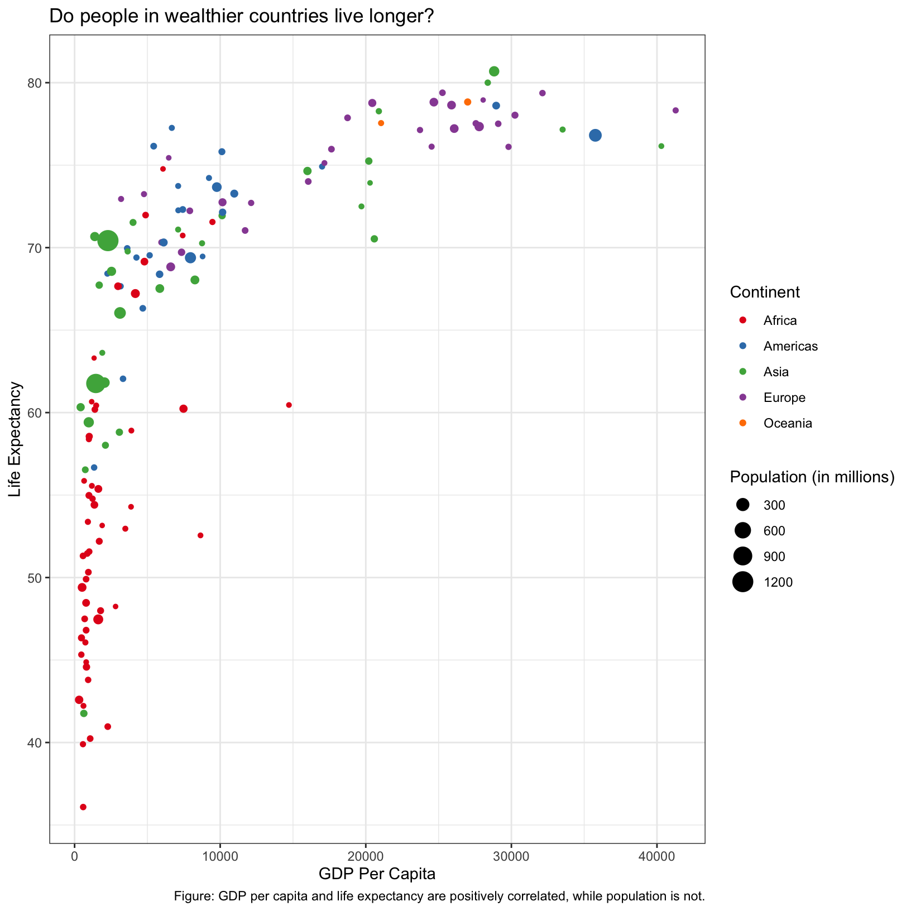
What did this do? It changed the background color, added a border
around the plot area, and perhaps some other things that are too subtle
to notice. There are many themes available as presets (see this
link), but we can also more finely control aspects of our plot with
the theme() function (see
documentation here or do ?theme).
Change font attributes
We can use the text argument of theme() to
change the size of all the fonts in the plot.
scatter_plot + theme(text = element_text(size = 16))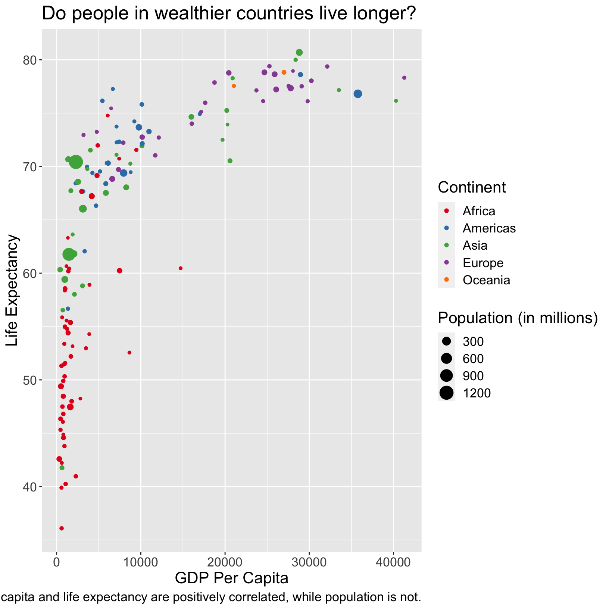
We could also change the color in a similar way:
scatter_plot + theme(text = element_text(color = 'blue'))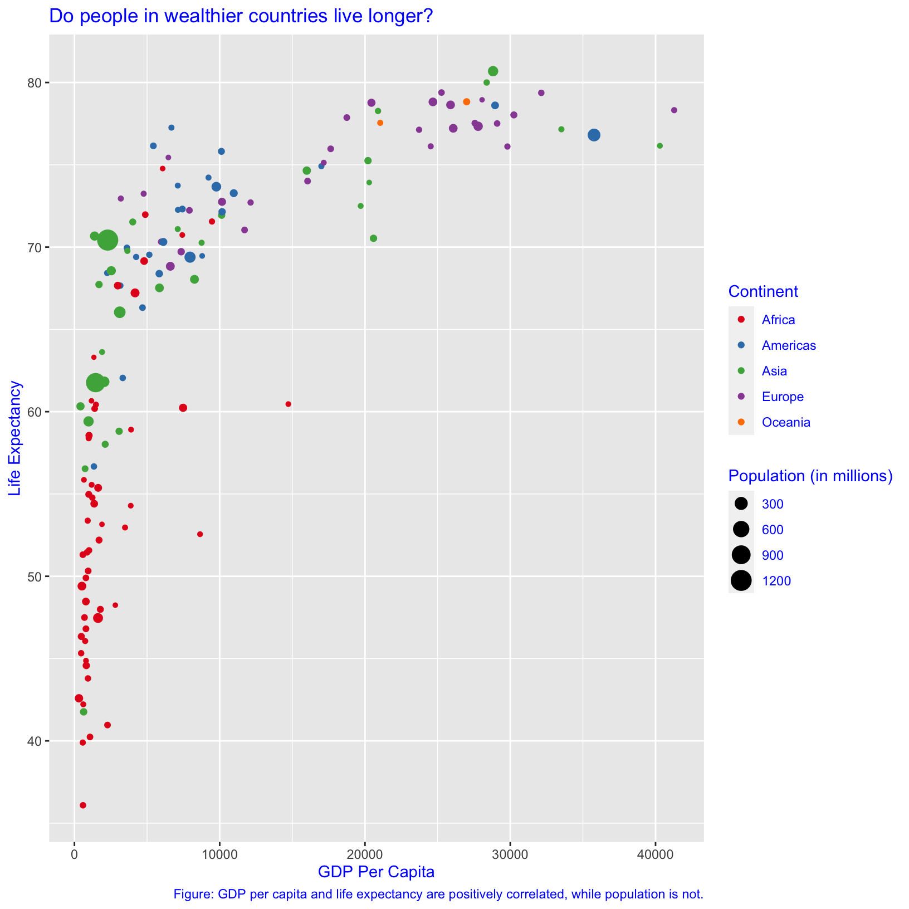
We could also rotate the axis labels using either the
axis.text.x or axis.text.y parameter of
theme(), and then the angle,
vjust, and hjust parameters of
element_text().
scatter_plot + theme(axis.text.x = element_text(angle = 90))Here the axis labels aren’t centered on the ticks, and seem to be
center justified. We use the vjust and hjust
parameters to fix that. This is a case where an example from searching
the internet was helpful.
scatter_plot + theme(axis.text.x = element_text(angle = 90, vjust = 0.5, hjust = 1))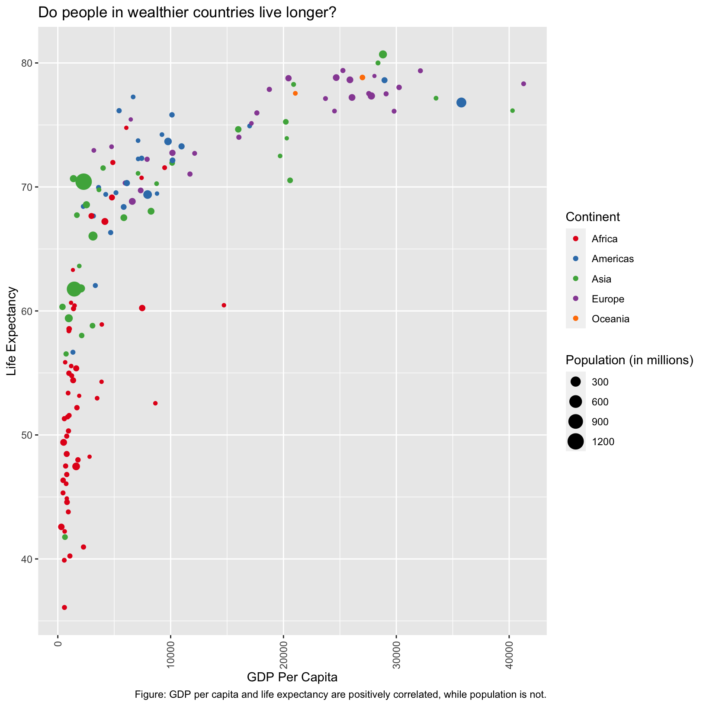
Labeling points
In the scatterplot, we might want to highlight certain countries,
such as Brazil, China, India, and the United States. There is a very
nice add-on package called ggrepel.
In particular, if we look at the example for how
to hide some of the labels, we’ll get a sense for how to write code
to highlight these countries.
It seems like we’ll need to add a new column to gapminder_1997 that
has empty labels ('') for the countries other than Brazil,
China, India, and the United States.
library(ggrepel)
gapminder_1997_labels = gapminder_1997 %>% mutate(label = ifelse(country %in% c('Brazil', 'China', 'India', 'United States'), country, ''))What have we done here? We’ve used the mutate() function
to create a new column called label, and the criteria for the entries
are, if the entry from the country column is in the set
c('Brazil', 'China', 'India', 'United Staets'), then pass
on the country name, otherwise give it an empty string ''.
How can we be sure that we’ve done the right thing?
gapminder_1997_labels# A tibble: 142 × 7
country year pop continent lifeExp gdpPercap label
<chr> <dbl> <dbl> <chr> <dbl> <dbl> <chr>
1 Afghanistan 1997 22227415 Asia 41.8 635. ""
2 Albania 1997 3428038 Europe 73.0 3193. ""
3 Algeria 1997 29072015 Africa 69.2 4797. ""
4 Angola 1997 9875024 Africa 41.0 2277. ""
5 Argentina 1997 36203463 Americas 73.3 10967. ""
6 Australia 1997 18565243 Oceania 78.8 26998. ""
7 Austria 1997 8069876 Europe 77.5 29096. ""
8 Bahrain 1997 598561 Asia 73.9 20292. ""
9 Bangladesh 1997 123315288 Asia 59.4 973. ""
10 Belgium 1997 10199787 Europe 77.5 27561. ""
# ℹ 132 more rowsLooks like the labels in the preview are correct, how can we check that the countries we wanted are correct?
gapminder_1997_labels %>% filter(label != '')# A tibble: 4 × 7
country year pop continent lifeExp gdpPercap label
<chr> <dbl> <dbl> <chr> <dbl> <dbl> <chr>
1 Brazil 1997 168546719 Americas 69.4 7958. Brazil
2 China 1997 1230075000 Asia 70.4 2289. China
3 India 1997 959000000 Asia 61.8 1459. India
4 United States 1997 272911760 Americas 76.8 35767. United StatesSo now let’s take a cue from the example code and incorporate it into our original code:
ggplot(data = gapminder_1997_labels) +
aes(x = gdpPercap, y = lifeExp, color = continent, size = pop/1000000, label = label) +
geom_point() +
geom_text_repel(box.padding = 0.5, max.overlaps = Inf) +
scale_color_brewer(palette = 'Set1') +
labs(x = 'GDP Per Capita', y = 'Life Expectancy', color = 'Continent', size = 'Population (in millions)',
title = 'Do people in wealthier countries live longer?',
caption = 'Figure: GDP per capita and life expectancy are positively correlated, while population is not.')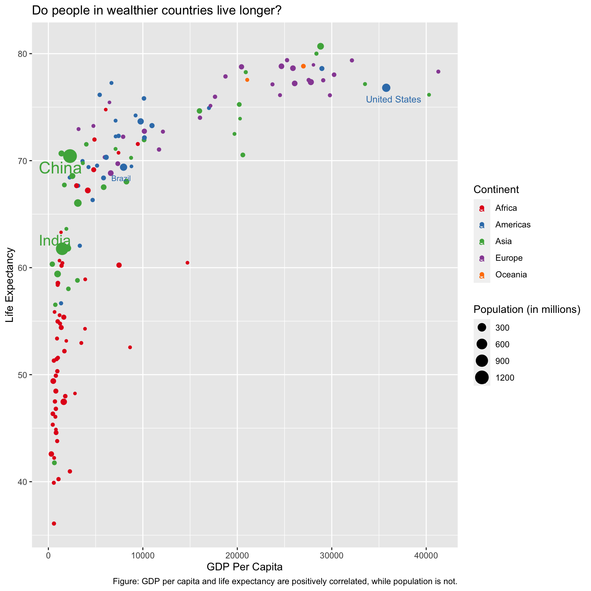
Notice that the size of the label is actually inherited from the size aesthetic. This is an example of aesthetics being inherited by default. This could be changed if we wanted.